library(tidyverse)
library(janitor)
library(dplyr)
library(ggplot2)
library(knitr)
library(ggridges)
library(treemapify)
df <- read_csv2("base_datos/universidades_europeas.csv")
df <- df %>% clean_names()4 Bitácora 4: Revisión y depuración final
4.1 Parte de planificación
Este es un gráfico de tipo heatmap que muestra la frecuencia de cada combinación de niveles académicos de padre y madre del estudiante, un color más oscuro significa mayor cantidad de observaciones de ese tipo. Además, está facetado por la categoría del estudiante (graduado, desertor o matriculado).
df <- df %>%
mutate(target = case_when(
target == "Dropout" ~ "Desertor",
target == "Enrolled" ~ "Matriculado",
target == "Graduate" ~ "Graduado",
TRUE ~ NA
))
df <- df %>%
mutate(mothers_qualification=case_when(
mothers_qualification== 1 ~ "Educación Secundaria",
mothers_qualification== 2 ~ "Licenciatura",
mothers_qualification== 3 ~ "Grado",
mothers_qualification== 4 ~ "Master",
mothers_qualification== 5~ "Doctorado",
mothers_qualification== 6 ~ "9 - 12mo Año de Escolaridad - No Completado",
mothers_qualification== 9 ~ "12º Año de Escolaridad",
mothers_qualification==10~ "11º Año de Escolaridad - No Completado",
mothers_qualification==11~ "7º Año (Antiguo)",
mothers_qualification==12~ "11º Año de Escolaridad",
mothers_qualification==13~ "2º Año del curso complementario de secundaria",
mothers_qualification==14~ "10º Año de Escolaridad",
mothers_qualification==18 ~ "Curso de comercio general",
mothers_qualification==19~ "Educación Básica 3º Ciclo (9º/10º/11º Año) o Equiv.",
mothers_qualification==20~ "Curso Complementario de Secundaria",
mothers_qualification==22~ "Curso técnico-profesional",
mothers_qualification==25~ "Curso Complementario de Secundaria - No Concluido",
mothers_qualification==27~ "7º Año de Escolaridad",
mothers_qualification==29~ "9º Año de Escolaridad - No Completado",
mothers_qualification==30~ "8º Año de Escolaridad",
mothers_qualification==31~ "Curso General de Administración y Comercio",
mothers_qualification==33~ "Contabilidad y Administración Suplementaria",
mothers_qualification==34~ "Desconocido",
mothers_qualification==35~ "No sabe leer ni escribir",
mothers_qualification==36~ "Sabe leer sin tener el 4º Año de Escolaridad",
mothers_qualification==37~ "Educación Básica 1º Ciclo (4º/5º Año) o Equiv.",
mothers_qualification==38~ "Educación Básica 2º Ciclo (6º/7º/8º Año) o Equiv.",
mothers_qualification==39~ "Curso de especialización tecnológica",
mothers_qualification==40~ "Educación Superior - Grado (1º Ciclo)",
mothers_qualification==41~ "Curso de estudios superiores especializados",
mothers_qualification==42~ "Curso técnico superior profesional",
mothers_qualification==43~ "Educación Superior - Máster (2º Ciclo)",
mothers_qualification==44~ "Educación Superior - Doctorado (3º Ciclo)",
TRUE ~ "Desconocido"
))
df <- df %>%
mutate(fathers_qualification=case_when(
fathers_qualification == 1 ~ "Educación Secundaria",
fathers_qualification == 2 ~ "Licenciatura",
fathers_qualification == 3 ~ "Grado",
fathers_qualification == 4 ~ "Master",
fathers_qualification == 5~"Doctorado",
fathers_qualification == 6 ~ "9 - 12mo Año de Escolaridad - No Completado",
fathers_qualification == 9 ~ "12º Año de Escolaridad",
fathers_qualification==10~ "11º Año de Escolaridad - No Completado",
fathers_qualification==11~ "7º Año (Antiguo)",
fathers_qualification==12~ "11º Año de Escolaridad",
fathers_qualification==13~ "2º Año del curso complementario de secundaria",
fathers_qualification==14~ "10º Año de Escolaridad",
fathers_qualification==18 ~ "Curso de comercio general",
fathers_qualification==19~ "Educación Básica 3º Ciclo (9º/10º/11º Año) o Equiv.",
fathers_qualification==20~ "Curso Complementario de Secundaria",
fathers_qualification==22~ "Curso técnico-profesional",
fathers_qualification==25~ "Curso Complementario de Secundaria - No Concluido",
fathers_qualification==27~ "7º Año de Escolaridad",
fathers_qualification==29~ "9º Año de Escolaridad - No Completado",
fathers_qualification==30~ "8º Año de Escolaridad",
fathers_qualification==31~ "Curso General de Administración y Comercio",
fathers_qualification==33~ "Contabilidad y Administración Suplementaria",
fathers_qualification==34~ "Desconocido",
fathers_qualification==35~ "No sabe leer ni escribir",
fathers_qualification==36~ "Sabe leer sin tener el 4º Año de Escolaridad",
fathers_qualification==37~ "Educación Básica 1º Ciclo (4º/5º Año) o Equiv.",
fathers_qualification==38~ "Educación Básica 2º Ciclo (6º/7º/8º Año) o Equiv.",
fathers_qualification==39~ "Curso de especialización tecnológica",
fathers_qualification==40~ "Educación Superior - Grado (1º Ciclo)",
fathers_qualification==41~ "Curso de estudios superiores especializados",
fathers_qualification==42~ "Curso técnico superior profesional",
fathers_qualification==43~ "Educación Superior - Máster (2º Ciclo)",
fathers_qualification==44~ "Educación Superior - Doctorado (3º Ciclo)",
TRUE ~ "Desconocido"
))
df$mothers_qualification<-as.factor(df$mothers_qualification)
df$fathers_qualification<-as.factor(df$fathers_qualification)
sum_mothers_qualification<-df %>%
mutate(mothers_qualification=fct_collapse(mothers_qualification,
"Primaria completada" = c("7º Año (Antiguo)","7º Año de Escolaridad",
"Educación Básica 2º Ciclo (6º/7º/8º Año) o Equiv."),
"Primaria no completado"=c("Sabe leer sin tener el 4º Año de Escolaridad",
"Educación Básica 1º Ciclo (4º/5º Año) o Equiv."),
"Secundaria completada" =c("Educación Secundaria",
"12º Año de Escolaridad", "Curso Complementario de Secundaria"),
"Secundaria no completado"=c("9 - 12mo Año de Escolaridad - No Completado",
"11º Año de Escolaridad - No Completado","11º Año de Escolaridad",
"2º Año del curso complementario de secundaria",
"Educación Básica 3º Ciclo (9º/10º/11º Año) o Equiv.",
"Curso Complementario de Secundaria - No Concluido",
"9º Año de Escolaridad - No Completado",
"8º Año de Escolaridad","10º Año de Escolaridad"),
"Universidad completada"=c("Licenciatura","Grado","Master","Doctorado",
"Educación Superior - Máster (2º Ciclo)",
"Educación Superior - Grado (1º Ciclo)",
"Educación Superior - Doctorado (3º Ciclo)"),
"Cursos complementarios"= c("Curso de comercio general",
"Curso técnico-profesional",
"Curso General de Administración y Comercio",
"Contabilidad y Administración Suplementaria",
"Curso de especialización tecnológica",
"Curso de estudios superiores especializados",
"Curso técnico superior profesional"),
"No sabe leer ni escribir" = c("No sabe leer ni escribir")
)) %>%
mutate(mothers_qualification=fct_lump(mothers_qualification, n=9)) %>%
count(mothers_qualification, sort=TRUE) %>%
rename(nivel_educativo_madre=n)
sum_fathers_qualification<-df %>%
mutate(fathers_qualification=fct_collapse(fathers_qualification,
"Primaria completada" = c("7º Año (Antiguo)","7º Año de Escolaridad",
"Educación Básica 2º Ciclo (6º/7º/8º Año) o Equiv."),
"Primaria no completado"=c("Sabe leer sin tener el 4º Año de Escolaridad",
"Educación Básica 1º Ciclo (4º/5º Año) o Equiv."),
"Secundaria completada" =c("Educación Secundaria", "12º Año de Escolaridad",
"Curso Complementario de Secundaria"),
"Secundaria no completado"=c("9 - 12mo Año de Escolaridad - No Completado",
"11º Año de Escolaridad - No Completado","11º Año de Escolaridad",
"2º Año del curso complementario de secundaria",
"Educación Básica 3º Ciclo (9º/10º/11º Año) o Equiv.",
"Curso Complementario de Secundaria - No Concluido",
"9º Año de Escolaridad - No Completado",
"8º Año de Escolaridad","10º Año de Escolaridad"),
"Universidad completada"=c("Licenciatura","Grado","Master","Doctorado",
"Educación Superior - Máster (2º Ciclo)",
"Educación Superior - Grado (1º Ciclo)",
"Educación Superior - Doctorado (3º Ciclo)"),
"Cursos complementarios"= c("Curso de comercio general",
"Curso técnico-profesional", "Curso General de Administración y Comercio",
"Contabilidad y Administración Suplementaria",
"Curso de especialización tecnológica",
"Curso de estudios superiores especializados",
"Curso técnico superior profesional"),
"No sabe leer ni escribir" = c("No sabe leer ni escribir")
)) %>%
mutate(fathers_qualification=fct_lump(fathers_qualification, n=9)) %>%
count(fathers_qualification, sort = TRUE) %>%
rename(nivel_educativo_padre=n)
sum_fathers_qualification<-sum_fathers_qualification %>%
rename(nivel_de_estudios=fathers_qualification)
sum_mothers_qualification<-sum_mothers_qualification %>%
rename(nivel_de_estudios=mothers_qualification)
sum_qualification<-sum_mothers_qualification %>%
left_join(sum_fathers_qualification, by="nivel_de_estudios")
target_parents_qualification<-df %>%
mutate(mothers_qualification=fct_collapse(mothers_qualification,
"Educación Primaria" = c("7º Año (Antiguo)","7º Año de Escolaridad",
"Educación Básica 2º Ciclo (6º/7º/8º Año) o Equiv.",
"Sabe leer sin tener el 4º Año de Escolaridad",
"Educación Básica 1º Ciclo (4º/5º Año) o Equiv."),
"Educación Secundaria" =c("Educación Secundaria",
"12º Año de Escolaridad",
"Curso Complementario de Secundaria",
"9 - 12mo Año de Escolaridad - No Completado",
"11º Año de Escolaridad - No Completado","11º Año de Escolaridad",
"2º Año del curso complementario de secundaria",
"Educación Básica 3º Ciclo (9º/10º/11º Año) o Equiv.",
"Curso Complementario de Secundaria - No Concluido",
"9º Año de Escolaridad - No Completado",
"8º Año de Escolaridad","10º Año de Escolaridad"),
"Educación Universitaria"=c("Licenciatura","Grado","Master","Doctorado",
"Educación Superior - Máster (2º Ciclo)",
"Educación Superior - Grado (1º Ciclo)",
"Educación Superior - Doctorado (3º Ciclo)"),
"Educación Técnico-Profesional"= c("Curso de comercio general",
"Curso técnico-profesional",
"Curso General de Administración y Comercio",
"Contabilidad y Administración Suplementaria",
"Curso de especialización tecnológica",
"Curso de estudios superiores especializados",
"Curso técnico superior profesional"),
"No sabe leer ni escribir" = c("No sabe leer ni escribir")
)) %>%
mutate(fathers_qualification=fct_collapse(fathers_qualification,
"Educación Primaria" = c("7º Año (Antiguo)","7º Año de Escolaridad",
"Educación Básica 2º Ciclo (6º/7º/8º Año) o Equiv.",
"Sabe leer sin tener el 4º Año de Escolaridad",
"Educación Básica 1º Ciclo (4º/5º Año) o Equiv."),
"Educación Secundaria" =c("Educación Secundaria", "12º Año de Escolaridad",
"Curso Complementario de Secundaria",
"9 - 12mo Año de Escolaridad - No Completado",
"11º Año de Escolaridad - No Completado",
"11º Año de Escolaridad",
"2º Año del curso complementario de secundaria",
"Educación Básica 3º Ciclo (9º/10º/11º Año) o Equiv.",
"Curso Complementario de Secundaria - No Concluido",
"9º Año de Escolaridad - No Completado", "8º Año de Escolaridad",
"10º Año de Escolaridad"),
"Educación Universitaria"=c("Licenciatura","Grado","Master","Doctorado",
"Educación Superior - Máster (2º Ciclo)",
"Educación Superior - Grado (1º Ciclo)",
"Educación Superior - Doctorado (3º Ciclo)"),
"Educación Técnico-Profesional"= c("Curso de comercio general",
"Curso técnico-profesional",
"Curso General de Administración y Comercio",
"Contabilidad y Administración Suplementaria",
"Curso de especialización tecnológica",
"Curso de estudios superiores especializados",
"Curso técnico superior profesional"),
"No sabe leer ni escribir" = c("No sabe leer ni escribir")
)) %>%
group_by(target, mothers_qualification, fathers_qualification) %>%
summarise(count=n())target_parents_qualification$mothers_qualification <- str_wrap(target_parents_qualification$mothers_qualification, width = 10)
target_parents_qualification<- target_parents_qualification %>%
filter(target %in% c("Graduado", "Desertor"))
target_parents_qualification <- target_parents_qualification %>%
filter(mothers_qualification != "Desconocido",
fathers_qualification != "Desconocido")
target_parents_qualification <- target_parents_qualification %>%
mutate(mothers_qualification = str_replace_all(mothers_qualification, "\\n", " "))target_parents_qualification <- target_parents_qualification %>%
mutate(mothers_qualification=fct_relevel(mothers_qualification,
"No sabe leer ni escribir",
"Educación Primaria",
"Educación Secundaria",
"Educación Técnico-Profesional",
"Educación Universitaria" ))
target_parents_qualification <- target_parents_qualification %>%
mutate(fathers_qualification =fct_relevel(fathers_qualification,
"No sabe leer ni escribir",
"Educación Primaria",
"Educación Secundaria",
"Educación Técnico-Profesional",
"Educación Universitaria" ))grafica_uno<-ggplot(target_parents_qualification,
aes(x = mothers_qualification, y = fathers_qualification, fill = count)) +
geom_tile() + scale_fill_gradient(low="#AAE48D",
high = "#2B7308",
guide = "colorbar" )+
facet_wrap(~ target) + labs(x = "Nivel educativo de la madre",
y = "Nivel educativo del padre",
fill = "Frecuencia"
)+
theme_bw()+theme(plot.title = element_text(hjust = 0.5),
axis.text.x = element_text(size=8,angle=90,hjust=1))
print(grafica_uno)
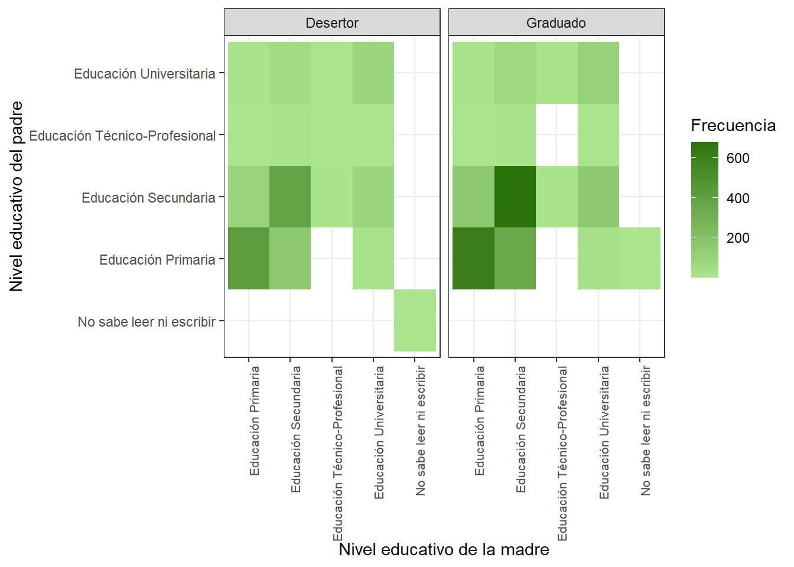
Este es un gráfico de barras que recuenta la frecuencia absoluta de estudiantes que están al día o atrasados con los pagos de las cuotas, los identifica con colores distintos y los separa según su categoría de la variable objetivo.
df <- df %>%
mutate(tuition_fees_up_to_date = case_when(
tuition_fees_up_to_date == 0 ~ "No",
tuition_fees_up_to_date == 1 ~ "Si",
TRUE ~ NA
))grafica_dos<-df %>%count(tuition_fees_up_to_date, target) %>%
ggplot(aes(x=target, y = n, fill = tuition_fees_up_to_date))+
geom_col(position = "dodge") +
theme_classic()+
labs(
x = "Tipo de Estudiante",
y = "Frecuencia",
fill = "Cuotas al día"
) +
scale_fill_manual(values = c("Si" = "#A2CD5A","No"="#CD5555"))+
theme(legend.position = "bottom",
panel.border = element_rect(colour = "black", fill = NA),
plot.title = element_text(hjust = 0.5))
print(grafica_dos)
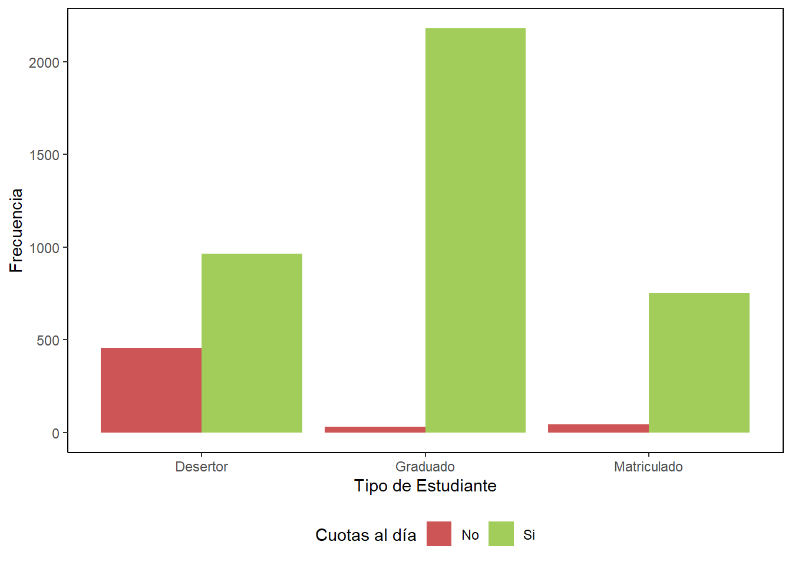
Este es otro gráfico de tipo heatmap, pero que ilustra la cantidad de estudiantes hallados en cada uno de los subgrupos generados al combinar la variable objetivo con una variable binaria (poseedor de beca o no).
df <- df %>%
mutate(scholarship_holder = case_when(
scholarship_holder == 0 ~ "No",
scholarship_holder == 1 ~ "Si",
TRUE ~ NA
))grafica_tres<-df %>%count(scholarship_holder, target) %>%
ggplot(aes(x=scholarship_holder, y = target, fill = n))+
geom_tile()+
theme_classic() +
labs(x = "Poseedor de Beca Socioeconómica", y = "Tipo de Estudiante", fill = "Frecuencia") +
scale_fill_continuous(low = "skyblue", high = "darkblue")+
theme(legend.position = "right",
panel.border = element_rect(colour = "black", fill=NA),
plot.title = element_text(hjust = 0.5))
print(grafica_tres)
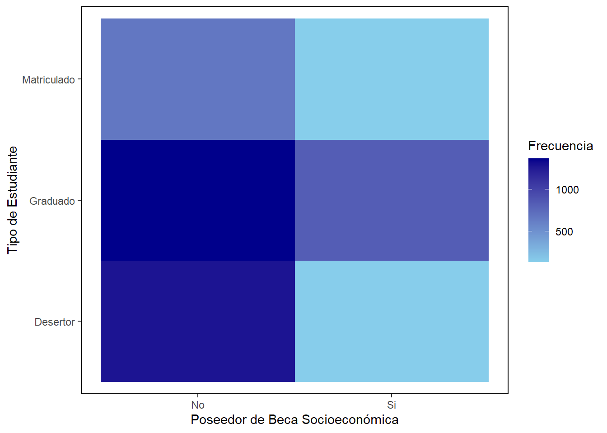
Este es un gráfico de barras adicional que visualiza la frecuencia absoluta de estudiantes nacionales e internacionales y los distingue con colores dentro de cada categoría de la variable objetivo.
df <- df %>%
mutate(international = case_when(
international == 0 ~ "No",
international == 1 ~ "Si",
TRUE ~ NA
))grafica_cuatro<-df %>%count(international, target) %>%
ggplot(aes(x=target, y = n, fill = international))+
geom_col(position = "stack") +
theme_classic()+
labs(
x = "Tipo de Estudiante",
y = "Frecuencia",
fill = "Internacional"
) +
scale_fill_manual(values = c("Si" = "#CD5555","No"="#BFEFFF"))+
theme(legend.position = "bottom",
panel.border = element_rect(colour = "black", fill = NA),
plot.title = element_text(hjust = 0.5))
print(grafica_cuatro)
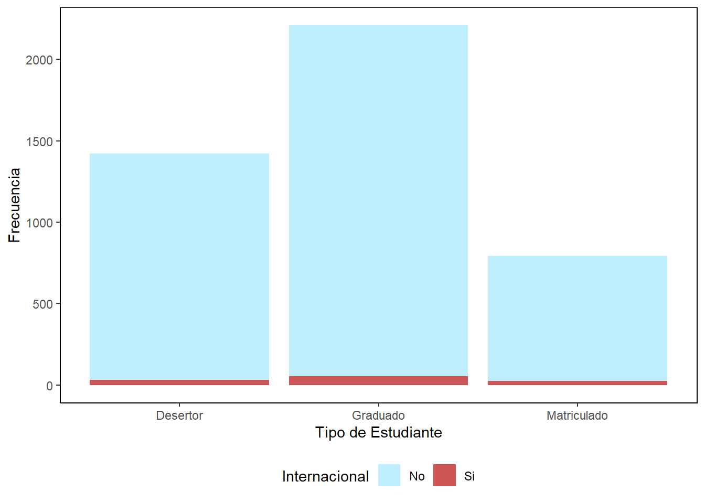
El gráfico mostrado es de tipo densidad y es útil para mostrar la distribución de los créditos aprobados en el primer semestre según la categorías de la variable objetivo. Como existe una superposición significativa de las densidades, fue necesario reducir la opacidad.
grafico_cinco<-ggplot(df, aes(x = curricular_units_1st_sem_approved, fill=target))+
geom_density(alpha=0.6, color=NA)+
labs(
x = "Créditos aprobados en el primer semestre",
y = "Densidad",
fill = "Categoría del estudiante"
)+ scale_fill_manual(values = c("Matriculado"= "#83B8c6", "Graduado"= "#CD5555", "Desertor"="#A2CD5A"))+cowplot::theme_cowplot()
print(grafico_cinco)
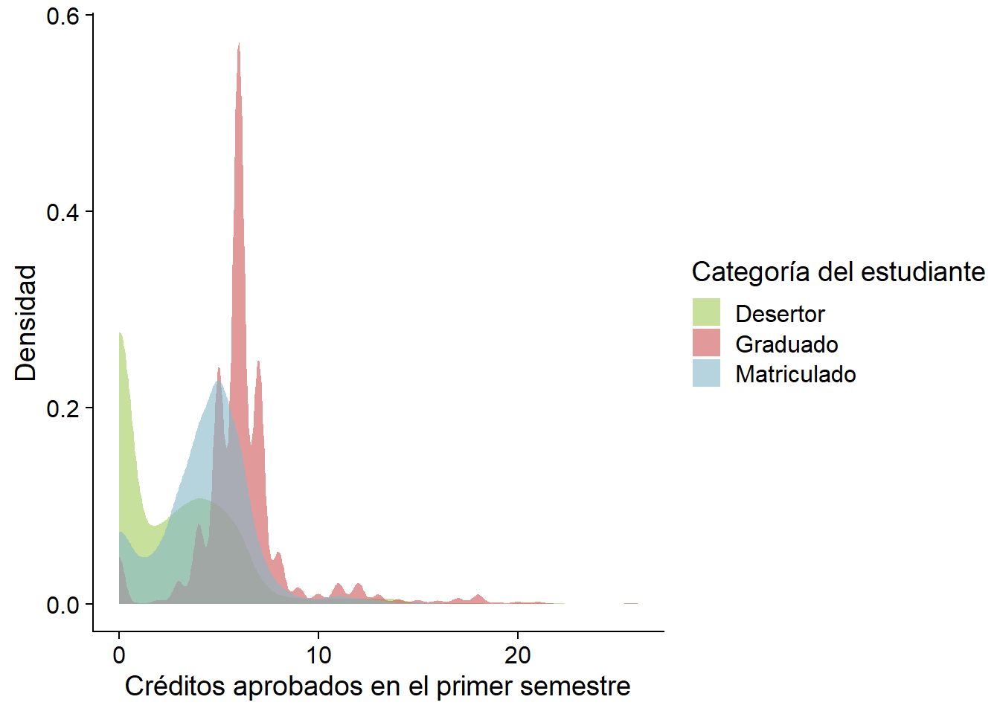
Nuevamente se presenta un gráfico de barras sobre frecuencia absoluta que segmenta las categorías de la variable objetivo por una variable binaria diferenciada por color, en este caso el género.
df<- df %>%
mutate (gender = case_when(
gender == "0" ~ "Mujer",
gender == "1" ~ "Hombre",
TRUE ~ NA
))grafico_seis<-df %>% ggplot(aes(fill=gender, x=target))+geom_bar(stat="count")+
theme_classic()+labs(
x="Tipo de estudiante",
y= "Cantidad de estudiantes",
fill="Género"
)+scale_fill_manual(values = c("Hombre"= "#FD8A8A", "Mujer"= "#A9CDD7"))+
scale_y_continuous(breaks = seq(0, max(table(df$target)), by = 200))
print(grafico_seis)
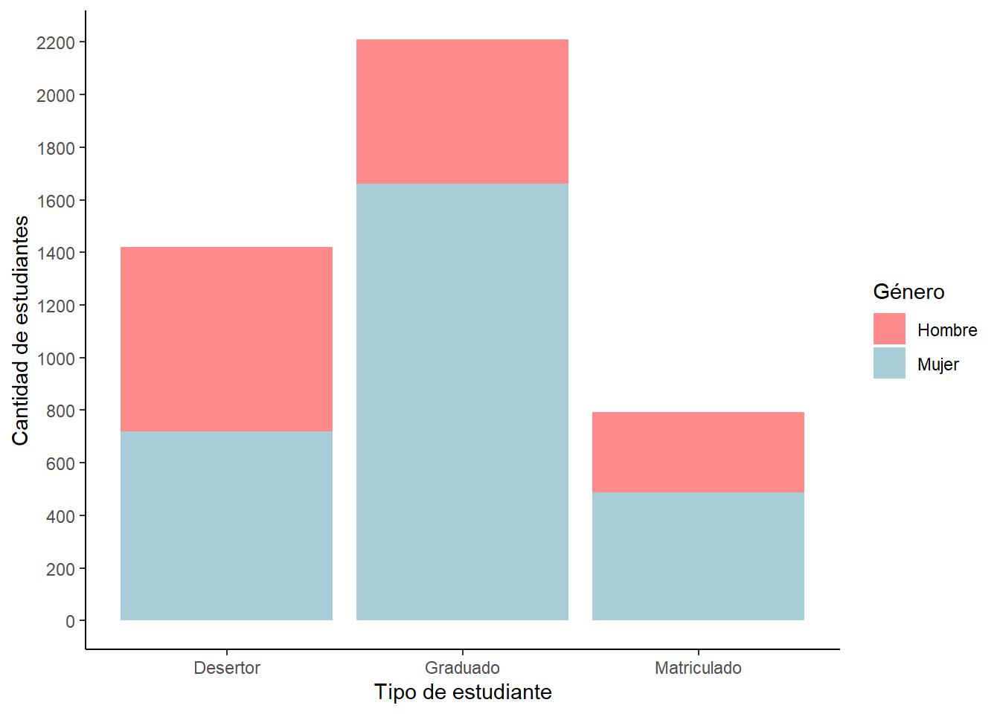
Este gráfico de estilo scatter genera puntos en el plano cuyas coordenadas corresponden a las notas del primer y segundo semestre. El color de cada punto denota la categoría de la variable objetivo a la que pertenece cada observación.Para apreciar mejor la información y recortar datos no relevantes, se expone solo las notas de 10 a 20.
df <- df %>%
mutate(
curricular_units_1st_sem_grade = as.numeric(gsub("(\\d+\\.\\d+).*", "\\1", curricular_units_1st_sem_grade)) %>%
round(2))
df <- df %>%
mutate(
curricular_units_2nd_sem_grade = as.numeric(gsub("(\\d+\\.\\d+).*", "\\1", curricular_units_2nd_sem_grade)) %>%
round(2))grafico_siete<-df %>%
filter(curricular_units_1st_sem_grade < 20,curricular_units_2nd_sem_grade > 10,
curricular_units_2nd_sem_grade < 20,curricular_units_1st_sem_grade > 10,
target %in% c("Graduado", "Desertor")) %>%
ggplot(aes(x=curricular_units_1st_sem_grade, y=curricular_units_2nd_sem_grade,
colour =target))+
geom_point()+labs(
x="Nota del primer semestre",
y="Nota del segundo semestre",
color="Tipo de estudiante"
)+theme_classic()
print(grafico_siete)
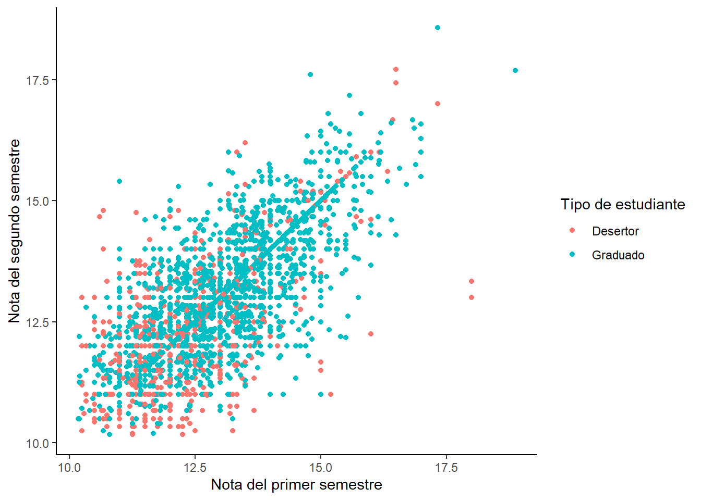
Este es un gráfico de tipo treemap que ilustra las proporciones de estudiantes graduados, matriculados y desertores dentro de dos grandes grupos creados a partir de una distinción por variable binaria (desplazado o no desplazado).
df <- df %>%
mutate(displaced = case_when(
displaced == 0 ~ "No desplazado",
displaced == 1 ~ "Desplazado",
TRUE ~ NA
))
df <- df %>% mutate(target = fct_relevel(target, "Desertor", "Graduado", "Matriculado"))
data_summary <- df %>%
group_by(displaced, target) %>%
summarise(count = n()) %>%
ungroup()grafica_ocho<-ggplot(data_summary, aes(area = count, fill = target,
label = paste(target, "\n", count),
subgroup = displaced)) +
geom_treemap(alpha = 0.8) +
geom_treemap_text(colour = "white", place = "centre", size = 10)+
facet_wrap(~displaced) +
labs(
fill = "Estado"
)+ scale_fill_manual(values = c("Matriculado"="#A9CDD7", "Desertor"= "#A2CD5A", "Graduado"="#CD5555"))+ theme_minimal()+theme(legend.position="none")
print(grafica_ocho)
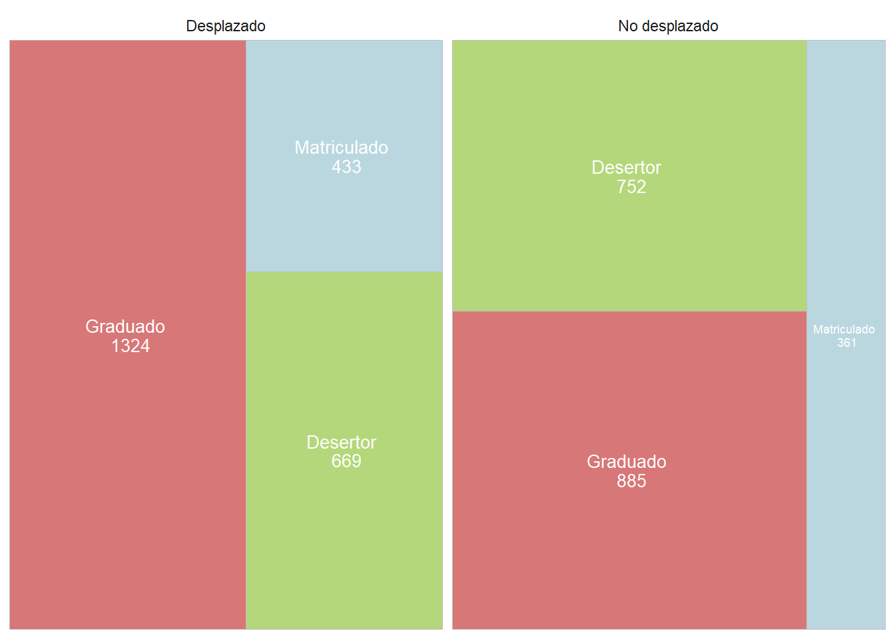
Este gráfico de tipo boxplot o diagrama de caja ilustra la distribución de las notas de admisión para cada categoría de la variable objetivo.
df <- df %>% mutate(target = fct_relevel(target, "Desertor", "Matriculado", "Graduado")) grafica_nueve<-ggplot(df, aes(x = admission_grade, y = target, fill = target))+
geom_boxplot(alpha = 0.7)+
labs(
x = "Nota de admisión",
y = "Categoría del estudiante"
)+scale_fill_manual(values = c("Matriculado"="#A9CDD7", "Desertor"= "#A2CD5A", "Graduado"="#CD5555"))+
theme_minimal()+
theme(legend.position="none")
print(grafica_nueve)
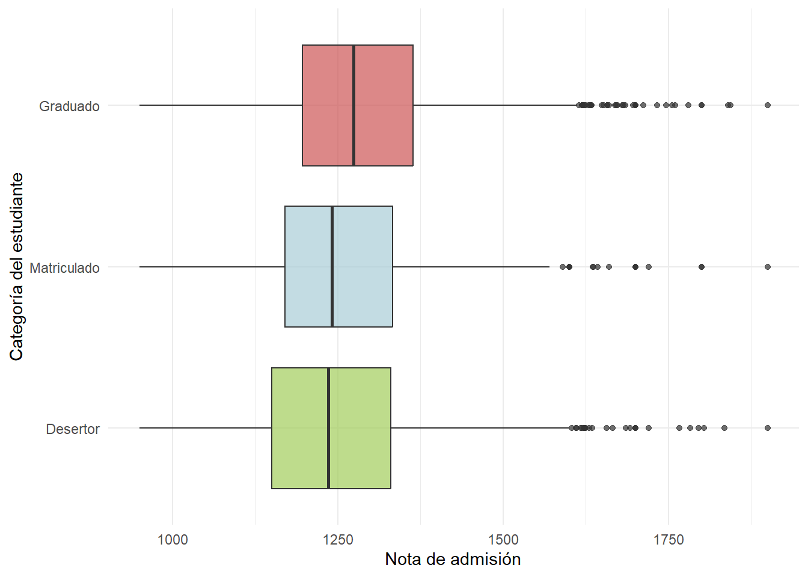
Este es un gráfico de densidad tipo ridgeline, el cual muestra las densidades de la edad al momento de ingreso a la universidad para cada categoría de la variable objetivo.
df <- df %>% mutate(target = fct_relevel(target, "Desertor", "Graduado",
"Matriculado"))grafica_diez<-ggplot(df, aes(x = age_at_enrollment, y = target, fill = target))+
geom_density_ridges(rel_min_height = 0.02, scale = 3, color=NA, alpha=0.7)+
xlim(15, 50)+
labs(
x = "Edad de ingreso a la universidad",
y = "Categoría del estudiante"
)+ scale_fill_manual(values = c("Matriculado"="#A9CDD7", "Desertor"= "#A2CD5A", "Graduado"="#CD5555"))+
theme_minimal()+
theme(legend.position="none")
print(grafica_diez)
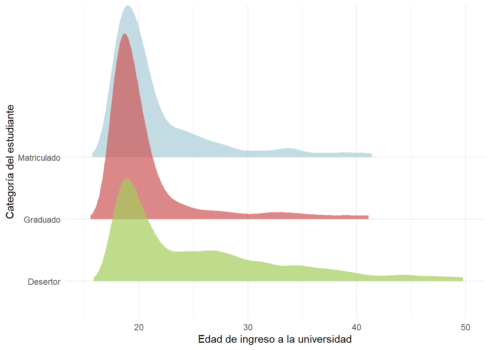
df<- df %>%
mutate(daytime_evening_attendance = case_when(
daytime_evening_attendance == 1 ~ "Mañana",
daytime_evening_attendance == 0 ~ "Noche",
TRUE ~ "Otros"
))Este gráfico de barras relaciona las variables categóricas del horario en el cuál se reciben las clases y si el estudiante completo su educación, está en proceso de o no lo hizo. El horario de clases se muestra por el color, uno siendo para clases diurnas y el otro para nocturnas.
grafica_once<-ggplot(df, aes(fill = daytime_evening_attendance, x = target))+geom_bar()+
scale_fill_manual(values = c("Noche"= "#CD5555", "Mañana"= "#A9CDD7"))+
labs(x="Estado del estudiante",
y="Cantidad de estudiantes", fill= "Horario de clases")+theme_classic()
print(grafica_once)
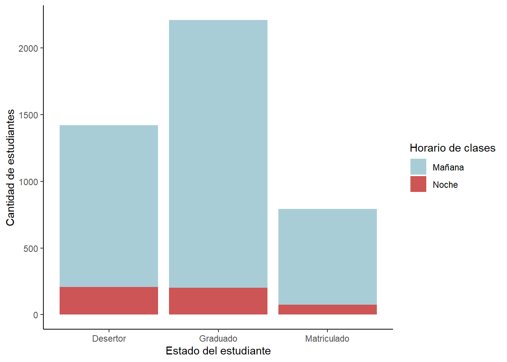
La siguiente figura muestra la relación entre el estado civil del estudiante y su progreso académico mostrando una predominancia significativa de los estudiantes solteros en las tres categorías, para la realización de este gráfico se tomo como persona con pareja a los pertenecientes a las categorías de casados y unión libre, como persona sin pareja a los de las categorías de viudo, separado y divorciado y se mantuvo la categoría de soltero por si sola por su predominancia.
df <- df %>%
mutate(marital_status = case_when(
marital_status == 1 ~ "Soltero",
marital_status == 2 ~ "Casado",
marital_status == 3 ~ "Viudo",
marital_status == 4 ~ "Divorciado",
marital_status == 5 ~ "Unión Libre",
marital_status == 6 ~ "Separado",
TRUE ~ NA
))
df$marital_status <- as.factor(df$marital_status)
df$marital_status <- fct_collapse(df$marital_status,
"Pareja" = c("Unión Libre", "Casado"),
"Sin Pareja" = c("Viudo", "Separado", "Divorciado"),
"Soltero" = c("Soltero"))grafica_doce<-df %>% ggplot(aes(x=marital_status, fill=marital_status))+
facet_wrap(~target)+
geom_bar()+
theme_minimal()+
labs(x = "Estado Civil",
y= "Cantidad de Estudiantes")+
scale_fill_manual(values = c("Sin Pareja"= "#CD5555", "Pareja"= "#A9CDD7", "Soltero" = "#A2CD5A"))+
theme(
plot.title = element_text(hjust = 0.5,size=14,face="bold"),
axis.title = element_text(size=12),
axis.text.x = element_text(angle =90, hjust=1),
legend.position = "none",
strip.text = element_text(size=12,face="bold"),
panel.grid.minor = element_blank(),
panel.border = element_rect(color="grey90", fill=NA)
)
print(grafica_doce)
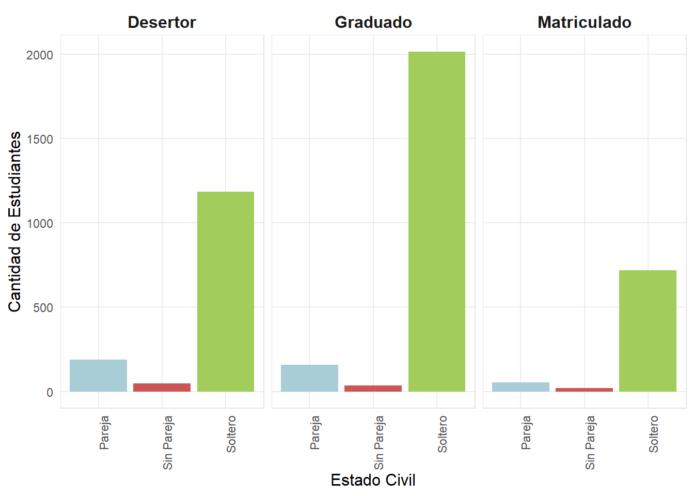
Esta tabla contiene la frecuencia absoluta de cada categoría de la variable objetivo y calcula la media, mediana y desviación estándar de las calificaciones obtenidas por los estudiantes en el primer semestre de universidad.
df_ordenAplicacion <- df %>%
filter(application_order > 0) %>%
count(application_order, target)grafica_trece <- ggplot(df_ordenAplicacion, aes(x = application_order, y=n))+
geom_point(size=3,color="blue", fill="lightblue",shape=21)+
geom_segment(aes(x=application_order, xend= application_order, y=0, yend=n), alpha = 0.5)+
scale_x_discrete(limits = as.character(1:9))+
scale_y_continuous(breaks = c(250, 750, 1250))+
facet_wrap(~target)+
labs(
x = "Prioridad de la universidad para el estudiante",
y = "Frecuencia"
)
print(grafica_trece)
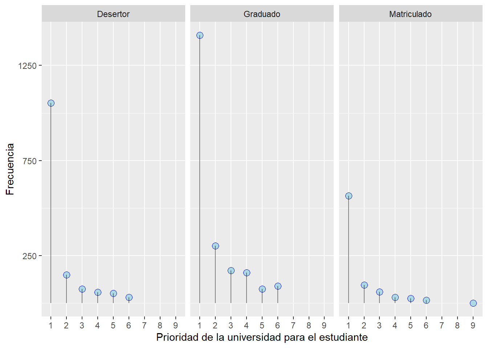
Este cuadro contiene la frecuencia absoluta de cada categoría de la variable objetivo y calcula la media, mediana y desviación estándar de las calificaciones obtenidas por los estudiantes en el primer semestre de universidad.
:::{#fig-tabla_cuatro}
tabla_cuatro <- df %>% group_by(target) %>%
summarise(
Media = mean(curricular_units_1st_sem_grade, na.rm=TRUE),
Mediana = median(curricular_units_1st_sem_grade, na.rm=TRUE),
DesviaciónEstándar = sd(curricular_units_1st_sem_grade, na.rm = TRUE),
N = n()
)
tabla_cuatro <- tabla_cuatro %>% filter(!is.na(target)) %>%
arrange(desc(N))kable(head(tabla_cuatro))| target | Media | Mediana | DesviaciónEstándar | N |
|---|---|---|---|---|
| Graduado | 13.962906 | 12.9 | 15.278949 | 2209 |
| Desertor | 7.458248 | 10.8 | 8.562162 | 1421 |
| Matriculado | 11.148388 | 12.0 | 5.266920 | 794 |
Similarmente, esta tabla recuenta la cantidad de estudiantes por género y calcula las medidas de tendencia central para la nota de cada grupo en los primeros dos semestres de universidad.
:::{#fig-tabla_cinco}
tabla_cinco <- df %>% group_by(gender) %>%
summarise(
N = n(),
Media_I = mean(curricular_units_1st_sem_grade, na.rm=TRUE),
Mediana_I = median(curricular_units_1st_sem_grade, na.rm=TRUE),
DesviaciónEstándar_I = sd(curricular_units_1st_sem_grade, na.rm = TRUE),
Media_II = mean(curricular_units_2nd_sem_grade, na.rm=TRUE),
Mediana_II = median(curricular_units_2nd_sem_grade, na.rm=TRUE),
DesviaciónEstándar_II = sd(curricular_units_2nd_sem_grade, na.rm = TRUE)
)
tabla_cinco <- tabla_cinco %>% filter(!is.na(gender)) %>%
arrange(desc(N))kable(head(tabla_cinco))| gender | N | Media_I | Mediana_I | DesviaciónEstándar_I | Media_II | Mediana_II | DesviaciónEstándar_II |
|---|---|---|---|---|---|---|---|
| Mujer | 2868 | 12.241307 | 12.4 | 13.433039 | 13.632374 | 12.33 | 20.73809 |
| Hombre | 1556 | 9.759627 | 11.8 | 9.971996 | 9.424743 | 11.57 | 11.66548 |
La última tabla recopila las cifras correspondientes a la cantidad de estudiantes presentes en cada curso contemplado en la base de datos, así como qué número de estudiantes pertenecen a cada categoría de la variable objetivo por curso.
df <- df %>%
mutate(course=case_when(
course ==33 ~ "Tecnologías de producción de biocombustibles",
course ==171 ~ "Animación y Diseño Multimedia",
course ==8014 ~ "Servicio Social (asistencia nocturna)",
course ==9003 ~ "Agronomía",
course ==9070 ~ "Diseño de comunicación",
course ==9085 ~ "Enfermería Veterinaria",
course ==9119 ~ "Ingeniería Informática",
course ==9130 ~ "Equinicultura",
course ==9147 ~ "Administración",
course ==9238 ~ "Servicio Social",
course ==9254 ~ "Turismo",
course ==9500 ~ "Enfermería",
course ==9556 ~ "Odontología",
course ==9670 ~ "Gerencia de Publicidad y Marketing",
course ==9773 ~ "Periodismo y Comunicación",
course ==9853 ~ "Educación básica",
course ==9991 ~ "Administración (asistencia nocturna)"
)):::{#fig-tabla_seis}
tabla_seis <- df %>% group_by(course) %>%
summarise(Cantidad = n(),
Desertor = sum(target == "Desertor"),
Graduado = sum(target == "Graduado"),
Matriculado = sum(target == "Matriculado"))
tabla_seis <- tabla_seis %>%
filter(!is.na(course)) %>%
rename(Curso = course) %>%
arrange(desc(Cantidad))kable(head(tabla_seis))| Curso | Cantidad | Desertor | Graduado | Matriculado |
|---|---|---|---|---|
| Enfermería | 766 | 118 | 548 | 100 |
| Administración | 380 | 134 | 138 | 108 |
| Servicio Social | 355 | 65 | 248 | 42 |
| Enfermería Veterinaria | 337 | 90 | 172 | 75 |
| Periodismo y Comunicación | 331 | 101 | 196 | 34 |
| Administración (asistencia nocturna) | 268 | 136 | 78 | 54 |
4.2 Fichas
- FICHA 14
Nombre de su hallazgo/resultado: Relación entre el estado del estudiante y el horario en el cual recibe sus clases
Resumen en una oración: Los estudiantes en horarios diurnos se gradúan con mayor frecuencia.
Principal característica: se comparan dos variables categóricas, donde se realiza un conteo de cuántos estudiantes llevaron clases diurnas o nocturnas conforme el tipo de estudiante que son (graduado, matriculado, desertor).
Problemas o posibles desafíos: Las razones por las cuales el estudiante decide o no recibir clases en la noche o mañana son desconocidas. Se pueden inferir ciertas razones por las cuales esto sucede pero no se conoce con total certeza ya que no es parte de los datos proporcionados. Esto genera cierto grado de error al asumir ciertos factores.
Resumen en un párrafo: La cantidad de estudiantes graduados es mucho mayor que la cantidad de estudiantes que han desertado. Sin embargo, la cantidad de personas que tomaron clases nocturnas es la misma en ambas categorías. Por lo tanto, se puede decir que aquellos que reciben clases diurnas se gradúan con mayor frecuencia. Una posible causa de esto, es que los estudiantes de horario nocturno toman clases a esta hora debido a otras responsabilidades como por ejemplo un trabajo o una familia.
- FICHA 15
Nombre de su hallazgo/resultado: Relación entre Estado Civil y Rendimiento Académico.
Resumen en una oración: Los estudiantes solteros tienen una mayor representación en todas las categorías de rendimiento académico, especialmente entre los estudiantes graduados.
Principal Característica: La categoría de estudiantes solteros domina significativamente en cada nivel de rendimiento académico.
Problemas o posibles desafíos: Falta de diversidad en el estado civil podría sesgar los resultados.
Resumen en un párrafo: El gráfico muestra la distribución del estado civil de los estudiantes en relación con su rendimiento académico, categorizado como desertor, graduado o matriculado. Se observa que los estudiantes solteros son predominantes en cada categoría especialmente entre los graduados, lo que sugiere una posible correlación entre el estado civil y el éxito académico.
- FICHA 16
Nombre de su hallazgo/resultado: Independencia entre el orden aplicación del estudiante y su permanencia en la carrera.
Resumen en una oración: No existe una relación clara entre la prioridad que le dio el estudiante a la universidad en que fue admitido y su permanencia en la carrera.
Principal Característica: este resultado fue obtenido a partir de un gráfico de tipo 랇ollipop (combinación de geom_point y geom_segment), facetado por la variable objetivo y que muestra la frecuencia absoluta de estudiantes en cada categoría.
Problemas o posibles desafíos: las muestras para las prioridades más bajas (mayores que 4) son muy pequeñas, por lo que se debe ser precavido al tratar de establecer patrones.
Resumen en un párrafo:Se generó un gráfico de tipo lollipop, tomando como eje horizontal cada uno de los nueve valores de la variable categórica Orden de aplicación y como eje vertical la frecuencia absoluta de estudiantes en cada valor. Es importante aclarar que el valor de Orden de aplicación corresponde al puesto que ocupaba la universidad analizada en una lista de universidades a las que aplicó cada estudiante. Luego, el gráfico se separó en tres facetas según la variable objetivo (graduado, desertor o matriculado) para identificar las tendencias en cada grupo. De esta manera, se logró determinar que los comportamientos de cada valor de prioridad son muy similares, existiendo más graduados que desertores y más desertores que matriculados para todos los valores. Esto implica que el rendimiento académico no se vio afectado por la prioridad que tenía esta universidad respecto a otras para cada estudiante.
Con estas 3 fichas de resultados adicionales, se considera que todas las relaciones entre variables pertinentes para esta investigación han sido cubiertas de forma satisfactoria. Aunque la base de datos escogida contiene otras variables que no forman parte de ningún gráfico, tabla o resultado, su ausencia es una decisión consciente y no una omisión. Algunas de ellas no forman parte del enfoque definido para este estudio, como la tasa de desempleo, el producto interno bruto y la inflación; los cuales son indicadores macroeconómicos que no pueden entenderse como características personales de un estudiante que influyan sobre su rendimiento. Otras variables como el modo de aplicación o las unidades curriculares de cada semestre sin considerar evaluaciones, no se consideraron relevantes según la bibliografía consultada. Por otro lado, analizar las relaciones entre variables sin conectarlas con la variable objetivo, por ejemplo vincular género con edad, habría generado resultados de carácter socioeconómico o demográfico sin que se pudieran extraer conclusiones sobre su impacto en el rendimiento académico, que es el principal objetivo de este trabajo.
4.3 Parte de escritura
4.3.1 Escribir, escribir, escribir
4.3.1.1 Conclusión
Durante la presente investigación se propuso identificar y analizar los factores sociales, económicos, académicos y familiares que influyen sobre la decisión de abandonar o continuar los estudios universitarios de los estudiantes. Se tomó un estudio realizado en una universidad europea sobre la permanencia de los estudiantes en la carrera o el abandono de sus estudios universitarios, para así realizar un análisis cuantitativo y gráfico acerca de estos factores. Según la literatura sobre la educación superior se encontraron muchas relaciones de estos factores y teorías al respecto. Se consideró este tema de investigación debido a la necesidad de comprender mejor el desarrollo del capital humano en la educación superior. A su vez se quiere estudiar cómo mejorar las condiciones de educación para muchas personas, considerando el tiempo que demandan las responsabilidades laborales o familiares, así como el desplazamiento al centro educativo.
Se realizó un análisis cuantitativo que se basó en la visualización de datos mediante el uso de las herramientas vistas en el curso Herramientas de Ciencia de Datos I, como el manejo de una base de datos y la graficación con tidyverse y otras librerías de R. Se tomó una base de datos que contaba con 4424 registros de estudiantes europeos donde se consideraban más de 20 variables macroeconómicas, microeconómicas, sociales, familiares, entre otras. Entre estas variables se encontraron algunos patrones que pueden responder las preguntas planteadas.
Con respecto a los factores académicos se encontró una fuerte relación entre las notas del primer semestre y las notas de admisión de los estudiantes con la probabilidad de graduación de los mismos, ya que son aquellos quienes obtienen mejores notas o no reprueban algún curso los que continúan su trayectoria académica y en la mayoría de casos se consigue la graduación. Este comportamiento coincide con las teorías consultadas, en particular con Garbanzo Vargas (2013) y Montero Rojas, Villalobos Palma, y Valverde Bermúdez (2007). Para los factores económicos se identificaron problemas que enfrentan los estudiantes como el ser poseedor de una beca socioeconómica o poder mantener sus cuotas escolares pagadas para poder continuar con sus estudios. El acceso a las becas mostró una clara influencia en la permanencia estudiantil ya que se encontró que los estudiantes becados presentaron una mayor proporción de graduaciones que los que no las portaban, dicho comportamiento se respalda con los hallazgos de Lobos Rivera y Rodríguez Vásquez (2023), pues los autores muestran que los gastos de transporte, matrícula, alimentación y demás son la principal causa del abandono de los estudios universitarios.
Al aplicar la metodología propuesta se encontró un resultado inesperado donde se contradecía la literatura al respecto, ya que los gráficos mostraron que los estudiantes que se necesitan desplazar de su hogar para poder estudiar muestran mayores tasas de graduación que los que no necesitan desplazarse. Por el contrario, según la teoría muchos factores económicos, sociales y familiares que conlleva el no desplazamiento pueden ayudar al estudiante, por ejemplo el estar cerca de su familia o no tener diversos gastos como los expuestos anteriormente.
Para las futuras investigaciones sobre la deserción estudiantil se recomienda incluir análisis que se compongan de la trayectoria completa del estudiante o de no ser posible agregar al menos un semestre más de estudios para estudiar cómo han evolucionado los factores anteriormente expuestos en la vida del estudiante. Se consideran como variables importantes la satisfacción estudiantil al completar los semestres para conocer el deseo del estudiante de seguir con la carrera seleccionada, algunas variables cualitativas como la motivación pueden revelar aún más información. Se pueden agregar estudios específicos de algunas áreas ya que se sabe que el área de letras y ciencias básicas son las que poseen una mayor tasa de deserción estudiantil en la mayoría de universidades. Para investigadores con mayor experiencia o conocimiento se puede incorporar un análisis multinivel donde se estudian las interacciones de los factores por separado para obtener un mismo resultado. Finalmente, este proyecto de investigación contribuye a llenar un vacío en la literatura al proporcionar un análisis de múltiples factores utilizando una base de datos actual y descubriendo una contradicción en la teoría al describir el impacto de los desplazamientos de los estudiantes. Estos descubrimientos y aportes abren líneas de investigación y cuestionan algunos supuestos sobre la deserción estudiantil.
4.3.1.2 Introducción
La educación es el motor de cualquier sociedad, sirve como mecanismo para expandir el conocimiento y enriquecer la cultura. A su vez, es una herramienta capaz de combatir la pobreza, mejorar la salud y lograr la igualdad de género. Sin embargo, una problemática creciente es la cantidad de personas que no completan sus estudios, ya sean de primaria, secundaria o educación superior. De estos niveles educativos, el abandono de la educación superior es el eje central de esta investigación.
La formación de profesionales es un peldaño fundamental en el crecimiento económico y exploración del conocimiento para cualquier nación por lo que la permanencia en los centros de educación universitaria es fundamental. No obstante, no es un trabajo sencillo encontrar las causas del abandono de esta etapa de la educación para de esta manera ayudar a contrarrestarlas. Es así, que se busca analizar la manera en que los factores sociales, económicos, académicos y familiares influyen en la trayectoria académica de la persona estudiante.
El contexto actual de la educación superior revela que a pesar de los esfuerzos por incrementar las tasas de graduación, la deserción sigue siendo un desafío significativo. La literatura existente sugiere que el nivel educativo de los padres, la estabilidad económica, el rendimiento académico anterior, el género, la movilidad geográfica, entre otros factores son clave para que el estudiante tome la decisión de desertar o continuar con sus estudios. Sin embargo, algunas fuentes son contradictorias acerca de qué tanta influencia tienen en tal decisión, lo que abre un espacio para un análisis más detallado, contextualizado y aplicado. Este trabajo se propone contribuir al conocimiento existente mediante un análisis tanto cualitativo como cuantitativo entre las variables brindadas por una base de datos de estudiantes en una universidad europea entre el 2008 y el 2018.
Mediante los datos provenientes de la base mencionada, que abarca información tanto demográfica, académica y socioeconómica de los estudiantes se pretende descubrir patrones y correlaciones que permitan entender mejor las razones detrás de la permanencia o abandono de la educación superior. Principalmente, se pretende reconocer aquellos factores que tienen mayor incidencia sobre el abandono de los estudios. El objetivo es identificar las variables críticas que afectan la decisión de continuar o no la carrera universitaria para tener una base con la cual se pueden crear estrategias efectivas en contra de la deserción universitaria. Para lograrlo, se empleará un análisis estadístico basado en la visualización de datos mediante gráficas y tablas.
Para la disminución de este fenómeno es fundamental fomentar el diálogo entre las instituciones gubernamentales y educativas ya que los factores que influyen en la deserción estudiantil están estrechamente interconectados. Se busca promover la reflexión para incentivar la mejora y expansión de las políticas y ayudas existentes en torno a este problema. Es importante que estas medidas reconozcan que la deserción no es el resultado de un único factor, sino una combinación de varios, por lo que se requiere planes integrales que aborden la complejidad del tema atacando múltiples factores simultáneamente.
5 Resumen
Existen múltiples factores externos que pueden influir sobre el desempeño académico de un estudiante. El propósito de esta investigación es analizar la interacción de las variables sociales, económicas, académicas y familiares en la trayectoria académica de un estudiante universitario. Para abordar el objetivo planteado, se realizó un análisis exploratorio de una base de datos elaborada por Realinho, et. al (2022). Esta base contiene información sobre las características socioeconómicas y académicas de 4424 estudiantes que ingresaron a una universidad en Portugal entre 2008 y 2018. El principal programa utilizado fue RStudio, donde se generaron múltiples tablas y gráficos que estudian la relación entre el rendimiento académico y las variables relevantes según la literatura. Se encontró que factores económicos como el goce de una beca y la puntualidad en los pagos de las cuotas tienen una fuerte relación con la permanencia del estudiante en la carrera. Asimismo, características demográficas como la edad de ingreso a la universidad y el género resultaron ser significativas sobre el rendimiento. Otros factores académicos, como el promedio de admisión a la universidad y las calificaciones obtenidas en los primeros dos semestres se identificaron como indicadores del rendimiento futuro del estudiante. Por otro lado, se observó que los antecedentes académicos del núcleo familiar del estudiante no son determinantes para su desempeño. Así, se concluye que el rendimiento académico de los estudiantes universitarios es un fenómeno complejo vinculado a diversas variables interconectadas. Finalmente, se propone que futuras investigaciones contemplen la posibilidad de ampliar el análisis de este tema mediante la aplicación de métodos estadísticos de carácter numérico.
6 Gitlog
ba89fa9 (2024-11-14, 04:37) [Debbie Con] (HEAD -> main, origin/main, origin/HEAD) feat: ortografia 1 file changed, 7 insertions(+), 5 deletions(-)
fd74502 (2024-11-14, 04:30) [Debbie Con] fix: referencias 5 files changed, 33 insertions(+), 27 deletions(-)
f2592c3 (2024-11-14, 04:19) [Debbie Con] fix: separacion parrafos 1 file changed, 13 insertions(+), 14 deletions(-)
3c2d4ad (2024-11-14, 04:17) [Debbie Con] fix: ortografia a19ac7d (2024-11-14, 04:17) [Debbie Con] fix: fig 2 files changed, 3 insertions(+), 3 deletions(-)
86f6977 (2024-11-14, 04:15) [Aaron Retana] feat: referencia figuras 1 file changed, 14 insertions(+), 13 deletions(-)
b2ee540 (2024-11-14, 04:01) [Debbie Con] feat: trabajo final 6 files changed, 383 insertions(+), 507 deletions(-)
c56af26 (2024-11-14, 03:45) [Debbie Con] feat: trabajo final 3 files changed, 489 insertions(+)
8f293c5 (2024-11-14, 03:44) [Debbie Con] feat: introduccion, resumen, conclusion 3 files changed, 59 insertions(+), 6 deletions(-)
aa9b0b2 (2024-11-14, 03:36) [Debbie Con] feat: corregir codigo 9 files changed, 4651 insertions(+), 1265 deletions(-)
02a4fea (2024-11-14, 03:32) [Debbie Con] fix: ortografia d671de0 (2024-11-14, 03:24) [Aaron Retana] feat: agrega sección de escritura 1 file changed, 4 insertions(+), 1 deletion(-)
c7cf72c (2024-11-14, 03:09) [Debbie Con] fix: conflictos 1 file changed, 1073 insertions(+)
a614e3f (2024-11-14, 03:09) [Debbie Con] feat: grafica 1 file changed, 13 insertions(+), 115 deletions(-)
75157d7 (2024-11-14, 03:06) [Debbie Con] fix: conflicto f51edfd (2024-11-14, 03:04) [Debbie Con] fix: conflicto 2 files changed, 60 insertions(+), 8 deletions(-)
7059d75 (2024-11-14, 02:21) [Aaron Retana] feat: agrega grafica 13 1 file changed, 25 insertions(+), 5 deletions(-)
594ee3b (2024-11-14, 02:10) [Aaron Retana] feat: agrega justificación de fichas 1 file changed, 1 insertion(+)
969676a (2024-11-14, 02:09) [Aaron Retana] feat: agrega ficha 16 1 file changed, 12 insertions(+)
9e76f75 (2024-11-14, 01:53) [Andrey Prado] feat: Arregla conflicto bitacora 4 1d8ba59 (2024-11-14, 01:49) [Andrey Prado] feat: añade títulos bitácora y gráfica 25 files changed, 328 insertions(+), 213 deletions(-)
c329378 (2024-11-14, 01:31) [Debbie Con] feat: cambio de variables 8b64f52 (2024-11-14, 01:30) [Debbie Con] fix: tabla a cuadro, grafica a figura 3 files changed, 30 insertions(+), 30 deletions(-)
d22fe3a (2024-11-14, 01:17) [Andrey Prado] feat: arregla conflictos 9201727 (2024-11-14, 01:14) [Debbie Con] feat: ficha 14 3 files changed, 37 insertions(+), 15 deletions(-)
d6bfbf6 (2024-11-14, 01:10) [Andrey Prado] feat: conflicto 1 file changed, 111 insertions(+), 24 deletions(-)
a36b822 (2024-11-14, 01:08) [Debbie Con] feat: graficas 21 files changed, 165 insertions(+), 110 deletions(-)
63cb5f6 (2024-11-14, 00:44) [Debbie Con] feat: cambio colores grafica 1 file changed, 1 insertion(+), 1 deletion(-)
43e04db (2024-11-14, 00:43) [Debbie Con] feat: graficas bit-4 18 files changed, 3754 insertions(+), 1389 deletions(-)
130523c (2024-11-13, 23:48) [Debbie Con] feat: cross-referencing 60 files changed, 4959 insertions(+), 54 deletions(-)
e70ca14 (2024-11-13, 23:17) [Debbie Con] feat: anadir bitacora 4 1 file changed, 1 insertion(+)
adfab24 (2024-11-13, 23:16) [Debbie Con] fix: conflictos 7fd49e4 (2024-11-13, 22:55) [Debbie Con] feat: bitacora 4 77 files changed, 15693 insertions(+), 128 deletions(-)
a794868 (2024-10-30, 17:32) [Aaron Retana] chore: actualiza index 2 files changed, 667 insertions(+), 8 deletions(-)
1325da7 (2024-10-30, 17:04) [Aaron Retana] chore: refresca sitio web 3 files changed, 1 insertion(+), 3 deletions(-)
9767eb0 (2024-10-30, 16:55) [Aaron Retana] chore: actualiza sitio web 62 files changed, 10195 insertions(+), 1 deletion(-)
b0363d5 (2024-10-30, 13:45) [Debbie Con] feat: summary git 1 file changed, 14 insertions(+)
d438ea5 (2024-10-30, 13:45) [Debbie Con] feat: actualizacion pagina 57 files changed, 2149 insertions(+), 8548 deletions(-)
2a36c2f (2024-10-30, 01:50) [Debbie Con] (tag: vbitacora-3) feat: correciones fichas 77f9c55 (2024-10-30, 01:49) [Debbie Con] feat: correcciones nombre 13 files changed, 19 insertions(+), 12 deletions(-)
743bbdf (2024-10-30, 01:45) [Aaron Retana] feat: agrega sección de cambios y mejoras 2 files changed, 6 insertions(+), 1 deletion(-)
401ca48 (2024-10-30, 01:33) [Debbie Con] feat: uve 06faa00 (2024-10-30, 01:32) [Debbie Con] feat: cambio idioma 4 files changed, 362 insertions(+), 89 deletions(-)
a24d63a (2024-10-30, 01:31) [Aaron Retana] feat: agrega UVE actualizada 1 file changed, 5 insertions(+), 1 deletion(-)
f3b34a9 (2024-10-30, 01:24) [Debbie Con] feat: coreccion codigo adfc7b5 (2024-10-30, 01:23) [Debbie Con] feat: logs.txt 3 files changed, 788 insertions(+), 18 deletions(-)
d745485 (2024-10-30, 01:21) [Aaron Retana] feat: añade resultados a sección de escritura 1 file changed, 29 insertions(+)
a0e5214 (2024-10-30, 01:12) [Aaron Retana] feat: agrega ficha 13 1 file changed, 12 insertions(+)
2bbd3f5 (2024-10-30, 01:09) [Aaron Retana] feat: agrega ficha 12 1 file changed, 13 insertions(+), 1 deletion(-)
3d6cc60 (2024-10-30, 01:06) [Aaron Retana] feat: agrega ficha 11 1 file changed, 12 insertions(+), 1 deletion(-)
23d6ad0 (2024-10-30, 01:02) [Aaron Retana] feat: agrega ficha 10 1 file changed, 13 insertions(+)
f13ce81 (2024-10-30, 01:00) [Aaron Retana] feat: agrega ficha 9 1 file changed, 13 insertions(+), 1 deletion(-)
38d0695 (2024-10-30, 00:57) [Aaron Retana] feat: agrega y corrige fichas de resultados 1 file changed, 16 insertions(+), 5 deletions(-)
a9b1fe1 (2024-10-30, 00:50) [Aaron Retana] feat: agrega metodología a parte de escritura 1 file changed, 8 insertions(+)
1973713 (2024-10-30, 00:49) [Aaron Retana] feat: agrega intro a parte de escritura 1 file changed, 20 insertions(+)
088f938 (2024-10-30, 00:45) [Aaron Retana] feat: agrega tabla ordenada de elementos de reporte 1 file changed, 9 insertions(+), 1 deletion(-)
cdb60a1 (2024-10-30, 00:39) [Aaron Retana] feat: agrega tabla de elementos de reporte 1 file changed, 17 insertions(+)
8cc9b25 (2024-10-30, 00:22) [Aaron Retana] feat: agrega descripción de tablas 1 file changed, 10 insertions(+), 3 deletions(-)
8877b0b (2024-10-30, 00:20) [Aaron Retana] feat: describe gráficas 9 y 10 1 file changed, 6 insertions(+), 2 deletions(-)
922c08a (2024-10-30, 00:18) [Aaron Retana] feat: describe gráficas 7 y 8 1 file changed, 6 insertions(+), 2 deletions(-)
a4a4e4a (2024-10-30, 00:16) [Aaron Retana] feat: describe gráficas 5 y 6 1 file changed, 5 insertions(+), 2 deletions(-)
8fb56d2 (2024-10-30, 00:14) [Aaron Retana] feat: describe gráficas 3 y 4 1 file changed, 2 insertions(+), 3 deletions(-)
555e545 (2024-10-30, 00:12) [Aaron Retana] feat: describe gráficas 1 y 2 1 file changed, 4 insertions(+), 2 deletions(-)
1549e7d (2024-10-30, 00:08) [Debbie Con] feat: graficas y tablas 4 files changed, 44 insertions(+), 34 deletions(-)
8aa825a (2024-10-30, 00:03) [Debbie Con] feat: graficas y tablas 19 files changed, 567 insertions(+), 65 deletions(-)
088ae4d (2024-10-29, 23:37) [Debbie Con] feat: grafica cuatro y cinco 16 files changed, 184 insertions(+), 67 deletions(-)
d7451d3 (2024-10-29, 23:27) [Debbie Con] feat: grafica dos y tres 35 files changed, 7872 insertions(+), 82 deletions(-)
6c613ca (2024-10-29, 23:21) [Andrey Prado] feat: añade cita de Montero 60 files changed, 3 insertions(+), 6150 deletions(-)
52480b5 (2024-10-29, 23:16) [Debbie Con] feat: grafica uno 1c3d358 (2024-10-29, 23:15) [Debbie Con] feat: grafica uno 61 files changed, 6603 insertions(+), 68 deletions(-)
4c06886 (2024-10-29, 22:24) [Andrey Prado] feat: cambios generales 38 files changed, 138 insertions(+), 901 deletions(-)
3bcf371 (2024-10-29, 20:43) [Debbie Con] fix: arreglo conflicto 491e5f1 (2024-10-29, 20:40) [Debbie Con] feat: bit 2 1 file changed, 2 insertions(+), 9 deletions(-)
97e26cf (2024-10-29, 20:37) [Andrey Prado] feat: resuelve conflictos 037b544 (2024-10-29, 20:34) [Andrey Prado] feat: añade gráficas 88 files changed, 48 insertions(+), 10001 deletions(-)
deab991 (2024-10-29, 20:32) [Debbie Con] fix: cambio en numeracion 3 files changed, 5 insertions(+), 5 deletions(-)
caf6e85 (2024-10-29, 14:38) [Andrey Prado] feat: conflictos 14421e2 (2024-10-29, 14:34) [Andrey Prado] feat: arregla conflictos 39 files changed, 225 insertions(+), 491 deletions(-)
556348c (2024-10-29, 02:15) [Debbie Con] feat: bit-3 1 file changed, 518 deletions(-)
4ff0a74 (2024-10-29, 02:14) [Debbie Con] feat: primeros 2 graficos y fichas 20 files changed, 4170 insertions(+)
ea33de1 (2024-10-29, 02:12) [Debbie Con] feat: correcciones bit-2 20 files changed, 44 insertions(+), 26 deletions(-)
bf3e022 (2024-10-29, 02:11) [Debbie Con] feat: anadir bit-3 1 file changed, 1 insertion(+)
ced36ad (2024-10-28, 20:00) [Debbie Con] feat: bitacora 3 15 files changed, 3771 insertions(+), 15 deletions(-)
3085249 (2024-10-28, 19:40) [Debbie Con] fix: pagina 9480394 (2024-10-28, 19:37) [Debbie Con] fix: arreglar pagina 1 file changed, 0 insertions(+), 0 deletions(-)
a5f4316 (2024-10-28, 19:36) [Debbie Con] fix: arreglo pagina 23 files changed, 260 insertions(+), 451 deletions(-)
70b89f7 (2024-10-28, 11:48) [Aaron Retana] chore: corrige código 4 files changed, 84 insertions(+), 101 deletions(-)
d15c35d (2024-10-28, 11:35) [Aaron Retana] chore: actualiza sitio 22 files changed, 191 insertions(+), 438 deletions(-)
c6e59d4 (2024-10-27, 17:21) [Debbie Con] fix: conflictos 81767de (2024-10-27, 17:16) [Debbie Con] feat: formato 1 file changed, 38 insertions(+), 27 deletions(-)
cd45756 (2024-10-27, 17:16) [Debbie Con] feat: formato 1 file changed, 1 insertion(+), 1 deletion(-)
481ccc0 (2024-10-27, 15:46) [Andrey Prado] feat: resuelve conflicto bitácora 2 f98a4da (2024-10-27, 15:42) [Andrey Prado] feat: errores 128 files changed, 6581 insertions(+), 396 deletions(-)
b9a4aa3 (2024-10-27, 15:24) [Andrey Prado] feat: arregla quarto 4 files changed, 243 insertions(+), 104 deletions(-)
d520b29 (2024-10-25, 18:14) [Debbie Con] fix: merge 5 files changed, 876 insertions(+), 328 deletions(-)
9054933 (2024-10-25, 18:09) [Debbie Con] feat: presentacion 9987449 (2024-10-24, 16:09) [Debbie Con] feat: anadir files 7d2edc8 (2024-10-03, 09:13) [Andrey Prado] feat: Añade presentación 1 file changed, 165 insertions(+)
0b57ea2 (2024-10-02, 20:49) [Andrey Prado] feat: cambios en conflictos 1154b84 (2024-10-02, 20:43) [Debbie Con] fix: formato fichas 2 files changed, 91 insertions(+), 57 deletions(-)
7148e89 (2024-10-02, 20:38) [Andrey Prado] feat: grafica extra 17 files changed, 9 insertions(+), 9 deletions(-)
f88b855 (2024-10-02, 20:37) [Andrey Prado] feat: Nuevas Gráficas 15 files changed, 12 insertions(+), 7 deletions(-)
2f7db99 (2024-10-02, 20:29) [Debbie Con] fix: merge b221a6c (2024-10-02, 20:29) [Debbie Con] feat: ageregar espacios en fichas 3 files changed, 207 insertions(+), 1626 deletions(-)
ea717bb (2024-10-02, 20:27) [Aaron Retana] feat: agrega enlaces de literatura 3 files changed, 45 insertions(+), 2 deletions(-)
a868108 (2024-10-02, 20:17) [Andrey Prado] feat: Añade otra gráfica 9 files changed, 369 insertions(+), 301 deletions(-)
a212003 (2024-10-02, 20:16) [Andrey Prado] feat: Añade Gráficas 9 files changed, 213 insertions(+), 85 deletions(-)
dbf773f (2024-10-02, 20:13) [Aaron Retana] feat: agrega nombres de autores a resúmenes 3 files changed, 445 insertions(+), 147 deletions(-)
88ab30c (2024-10-02, 20:02) [Debbie Con] fix: tabla y grafica 80ee2db (2024-10-02, 19:56) [Debbie Con] fix: arreglos tabla 2 files changed, 16 insertions(+), 8 deletions(-)
0673769 (2024-10-02, 19:39) [Andrey Prado] feat: Tabla nueva 4 files changed, 92 insertions(+), 40 deletions(-)
c854795 (2024-10-02, 19:27) [Andrey Prado] feat: Tabla Nueva Arreglada 7eb0163 (2024-10-02, 19:23) [Andrey Prado] feat: tabla nueva 1 file changed, 57 insertions(+), 2 deletions(-)
c81ceea (2024-10-02, 19:02) [Debbie Con] feat: fichas resultado 1 file changed, 39 insertions(+)
4274932 (2024-10-02, 18:49) [Andrey Prado] feat: Estructura quarto ffc03e0 (2024-10-02, 18:48) [Andrey Prado] fix: conflictos 66bf831 (2024-10-02, 18:46) [Debbie Con] feat: correccion tabla 1 file changed, 3 insertions(+), 2 deletions(-)
f08a105 (2024-10-02, 18:38) [Andrey Prado] fix: arregla estructura 37 files changed, 21 insertions(+), 6523 deletions(-)
5dccc15 (2024-10-02, 18:31) [Andrey Prado] fix: Arregla Estructura de Todo 1 file changed, 14 insertions(+), 35 deletions(-)
3250d4e (2024-10-02, 18:30) [Debbie Con] feat: formato 4a9398d (2024-10-02, 18:05) [Debbie Con] feat: contrastes y tabla literaria aefe3dd (2024-10-02, 17:52) [Andrey Prado] feat: Añade Gráficas y Arregal Estructura Quarto 2 files changed, 31 insertions(+), 125 deletions(-)
2580172 (2024-10-02, 14:39) [Debbie Con] fix: graficas 2 files changed, 166 insertions(+), 39 deletions(-)
4ba62a8 (2024-10-02, 14:25) [Debbie Con] fix: tamano grafico 1 file changed, 18 insertions(+), 5 deletions(-)
9630071 (2024-10-02, 11:57) [Andrey Prado] feat: intento de subir gráficas 2 files changed, 426 insertions(+), 32 deletions(-)
8f48b5b (2024-10-02, 10:57) [Andrey Prado] feat: Arreglos y Cambios realizados 2 files changed, 19 insertions(+), 9 deletions(-)
8f22f04 (2024-10-02, 10:38) [Andrey Prado] feat: Arreglos Git 39cac65 (2024-10-02, 10:25) [Andrey Prado] fix: Arregla Conflicto 7c9d29c (2024-10-02, 01:18) [Debbie Con] feat: fichas de 3-10 1 file changed, 178 insertions(+)
82b1601 (2024-10-02, 00:34) [Debbie Con] feat: pegar resumenes y intento tabla 1 file changed, 49 insertions(+), 7 deletions(-)
56a034c (2024-10-01, 22:51) [Debbie Con] feat: esqueleto bitacora 2 3 files changed, 132 insertions(+), 102 deletions(-)
1808bb3 (2024-10-01, 20:45) [Andrey Prado] feat: Gráfico Nacionalidad-Nota 1 file changed, 40 insertions(+)
8cf23eb (2024-10-01, 20:12) [Andrey Prado] feat: resuelve conflicto 146ec89 (2024-10-01, 20:09) [Andrey Prado] chore: Cambios en bitácora 5 files changed, 22 insertions(+)
55a7805 (2024-10-01, 18:03) [Andrey Prado] feat: Merge 1 file changed, 4 insertions(+), 1 deletion(-)
39b3c68 (2024-09-30, 23:53) [Debbie Con] feat: grafico estudiantes y permanencia 1 file changed, 248 insertions(+), 6 deletions(-)
a42f45f (2024-09-30, 22:48) [Andrey Prado] feat: Gráfica nueva 2 files changed, 78 insertions(+), 3 deletions(-)
96281f6 (2024-09-30, 22:29) [Debbie Con] feat: grafico de nivel educativo padres y educacion del estudiante 1 file changed, 2 insertions(+), 2 deletions(-)
aade898 (2024-09-30, 22:09) [Debbie Con] fix: formato 46f0cb5 (2024-09-30, 10:33) [Debbie Con] fix: arreglos 1 file changed, 3 insertions(+)
856fe0e (2024-09-30, 10:26) [Andrey Prado] feat: Agrega Base de Datos 1 file changed, 4425 insertions(+)
db8636e (2024-09-26, 19:17) [Andrey Prado] fix: Resuelve Conflicto 2e32922 (2024-09-26, 19:14) [Andrey Prado] feat: Añade paquetes y 3 gráficos 1 file changed, 131 insertions(+)
dec3d4d (2024-09-26, 17:47) [Andrey Prado] feat: Cambio de Rama 18 files changed, 655 insertions(+), 644 deletions(-)
998b383 (2024-09-26, 17:42) [Andrey Prado] feat: Agrega archivo .R 2 files changed, 36 insertions(+), 2 deletions(-)
286943a (2024-09-16, 21:09) [Andrey Prado] feat: Agregar Bitacora 2 2 files changed, 9 insertions(+)
8105336 (2024-09-04, 23:00) [Aaron Retana] feat: actualiza la bitácora 1 a versión final 2 files changed, 12 insertions(+), 4 deletions(-)
872bfc2 (2024-09-04, 22:57) [Andrey Prado] feat: imágenes en carpeta 31 files changed, 0 insertions(+), 0 deletions(-)
64f0c27 (2024-09-04, 22:51) [Andrey Prado] feat: añadi imagenes 1 file changed, 14 insertions(+), 1 deletion(-)
4f85a49 (2024-09-04, 22:16) [Aaron Retana] feat: actualiza el sitio con correcciones 3 files changed, 161 insertions(+), 69 deletions(-)
44614d2 (2024-09-04, 22:03) [Debbie Con] (tag: vBitacora-1) fix: correcciones formato 1 file changed, 75 insertions(+), 93 deletions(-)
5a8e679 (2024-09-04, 22:00) [Debbie Con] fix: coreccion de errores ortograficos y redaccion 1 file changed, 8 insertions(+), 8 deletions(-)
01c8049 (2024-09-04, 20:28) [Debbie Con] fix: correccion escritura de definicion 6399d3b (2024-09-04, 20:16) [Debbie Con] feat: correcion cita en resumen 1 file changed, 1 insertion(+), 1 deletion(-)
c05e2e3 (2024-09-04, 20:12) [Aaron Retana] feat: actualiza los contenidos del sitio 2 files changed, 7 insertions(+), 7 deletions(-)
bc250ed (2024-09-04, 20:11) [Aaron Retana] feat: actualiza el contenido del sitio 3 files changed, 121 insertions(+), 32 deletions(-)
53a05b6 (2024-09-04, 20:08) [Debbie Con] fix: formato cita en teoria 2 1 file changed, 1 insertion(+), 1 deletion(-)
94c35fe (2024-09-04, 20:04) [Debbie Con] feat: correcion introduciion (2) 1 file changed, 1 insertion(+)
80742fd (2024-09-04, 20:03) [Debbie Con] feat: correccion introduccion 1 file changed, 1 insertion(+)
9a6cc69 (2024-09-04, 20:02) [Debbie Con] feat: añadi introduccion 1 file changed, 2 insertions(+)
09fab70 (2024-09-04, 19:48) [Aaron Retana] fix: arregla menciones de la referencias 1 file changed, 13 insertions(+), 13 deletions(-)
1fe7e3d (2024-09-04, 19:36) [Aaron Retana] feat: parte final del resumen 1 file changed, 34 insertions(+)
b09cb11 (2024-09-04, 19:33) [Aaron Retana] feat: segunda parte de resumen 1 file changed, 36 insertions(+)
3989672 (2024-09-04, 19:28) [Debbie Con] fix: corregi cita 1 file changed, 1 insertion(+), 1 deletion(-)
23bac8f (2024-09-04, 19:27) [Aaron Retana] fix: arregla conflicto d43f101 (2024-09-04, 19:21) [Aaron Retana] feat: agrega primera parte del resumen 1 file changed, 273 insertions(+), 100 deletions(-)
9b9c706 (2024-09-04, 19:20) [Andrey Prado] fix: Arregle Cambios 5def0cd (2024-09-04, 19:16) [Debbie Con] feat: añadi prregunta investigacion y subtitulo 1 file changed, 5 insertions(+), 1 deletion(-)
50fdb9b (2024-09-04, 18:59) [Andrey Prado] fix: Corrección Formato 1 file changed, 5 insertions(+)
b8ba762 (2024-09-04, 18:19) [Andrey Prado] feat: añade referencias base de datos 1 file changed, 17 insertions(+)
234e7e5 (2024-09-04, 18:14) [Andrey Prado] fix: Arreglé error references.bib 1 file changed, 2 insertions(+), 2 deletions(-)
f824254 (2024-09-04, 18:10) [Debbie Con] feat: añadi citas en fichas 1 file changed, 5 insertions(+), 4 deletions(-)
11ead08 (2024-09-04, 18:09) [Debbie Con] feat: añadi referencias 1 file changed, 12 insertions(+), 3 deletions(-)
c589b3f (2024-09-04, 17:32) [Debbie Con] feat: añadi ficha 3 1 file changed, 15 insertions(+), 12 deletions(-)
a763be7 (2024-09-04, 17:28) [Andrey Prado] feat: Añadi Datos 1 file changed, 85 insertions(+), 5 deletions(-)
29ab382 (2024-09-04, 17:15) [Andrey Prado] feat: Añadi parte datos 1 file changed, 8 insertions(+), 5 deletions(-)
6183a7d (2024-09-04, 17:04) [Andrey Prado] feat: Agrega Bibliografía 1 file changed, 10 insertions(+)
07a7b6e (2024-09-04, 16:53) [Debbie Con] feat: añadi segunda teoria 1 file changed, 5 insertions(+), 2 deletions(-)
e08c51b (2024-09-04, 16:50) [Debbie Con] feat: añadi primera teoria 1 file changed, 3 insertions(+), 1 deletion(-)
df1bd2f (2024-09-04, 14:49) [Aaron Retana] chore: actualiza el sitio web posterior a nuevo render 2 files changed, 32 insertions(+), 53 deletions(-)
7b7eadc (2024-09-04, 14:42) [Aaron Retana] chore: actualiza el sitio web 2 files changed, 62 insertions(+), 65 deletions(-)
577e8b6 (2024-09-04, 14:36) [Aaron Retana] feat: añade las conclusiones de la argumentación de cada pregunta 1 file changed, 47 insertions(+), 3 deletions(-)
4a5250b (2024-09-04, 14:21) [Aaron Retana] feat: agrega argumentos de la segunda pregunta 1 file changed, 20 insertions(+), 3 deletions(-)
087d2eb (2024-09-04, 14:00) [Aaron Retana] feat: agrega ficha de literatura 2 1 file changed, 47 insertions(+), 34 deletions(-)
b2ed73e (2024-09-04, 13:48) [Aaron Retana] feat: agrega ficha de literatura 1 1 file changed, 69 insertions(+), 16 deletions(-)
96b5875 (2024-09-04, 12:02) [Aaron Retana] feat: incorpora argumentos de la cuarta pregunta 1 file changed, 23 insertions(+), 4 deletions(-)
cfe8ed2 (2024-09-04, 11:54) [Aaron Retana] feat: agrega contraargumentos de cuarta pregunta 1 file changed, 21 insertions(+), 4 deletions(-)
2a4d1d4 (2024-09-04, 11:44) [Aaron Retana] feat: añade argumentos de tercera pregunta 1 file changed, 20 insertions(+), 3 deletions(-)
bf375c9 (2024-09-04, 11:36) [Aaron Retana] feat: añade contraargumentos de tercera pregunta 1 file changed, 20 insertions(+), 3 deletions(-)
1e94c61 (2024-09-04, 11:31) [Aaron Retana] feat: agrega contraargumentos de segunda pregunta 1 file changed, 33 insertions(+), 6 deletions(-)
2f4aba4 (2024-09-04, 11:20) [Aaron Retana] feat: agrega argumentos de primera pregunta 3 files changed, 27 insertions(+), 7 deletions(-)
d496660 (2024-09-04, 11:12) [Aaron Retana] feat: agrega contraargumentos de primera pregunta 3 files changed, 259 insertions(+), 173 deletions(-)
3b8db84 (2024-09-04, 10:46) [Aaron Retana] feat: agrega imagen de la UVE al sitio 1 file changed, 0 insertions(+), 0 deletions(-)
fc41f72 (2024-09-04, 10:39) [Aaron Retana] feat: actualiza el sitio web 3 files changed, 416 insertions(+), 31 deletions(-)
32e7b55 (2024-09-04, 10:36) [Aaron Retana] chore: modifica gitignore para incluir docs 1 file changed, 3 deletions(-)
2582eb7 (2024-09-04, 10:24) [Aaron Retana] fix: agrega source a repo-actions 1 file changed, 1 insertion(+), 1 deletion(-)
77744a8 (2024-09-04, 10:04) [Aaron Retana] fix: corrección de enlace del repositorio 1 file changed, 2 insertions(+), 2 deletions(-)
cbf261f (2024-09-04, 01:24) [Andrey Prado] feat: error en commits f619a5d (2024-09-04, 01:23) [Andrey Prado] chore: error 1 file changed, 1 deletion(-)
f36fcb7 (2024-09-04, 01:23) [Andrey Prado] feat: Bibliografía Urie Bronfenbrenner 1 file changed, 12 insertions(+), 1 deletion(-)
ab46e9b (2024-09-04, 01:12) [Debbie Con] chore: eliminar chapter referencias 1 file changed, 1 deletion(-)
acd3650 (2024-09-04, 01:07) [Andrey Prado] feat: errores en url referencias 1c7d78b (2024-09-04, 01:06) [Andrey Prado] fix: errores en el url 1 file changed, 5 insertions(+), 4 deletions(-)
135b070 (2024-09-04, 01:05) [Debbie Con] fix: formato conceptos 1 file changed, 4 insertions(+), 4 deletions(-)
800cc0a (2024-09-04, 01:01) [Andrey Prado] fix: error bibliografía 1 file changed, 1 insertion(+), 1 deletion(-)
edbb294 (2024-09-04, 01:00) [Andrey Prado] feat: arreglo bibliografía f871707 (2024-09-04, 00:59) [Andrey Prado] feat: bibliografía nueva 1 file changed, 31 insertions(+), 1 deletion(-)
adaf5aa (2024-09-04, 00:57) [Debbie Con] fix: formato teorias o principios 1 file changed, 5 insertions(+), 4 deletions(-)
42b76e3 (2024-09-04, 00:55) [Debbie Con] feat: añadi nombre y seccion de teorias 1 file changed, 6 insertions(+)
47bfed5 (2024-09-04, 00:47) [Debbie Con] feat: tension 2 y 3 1 file changed, 4 insertions(+), 2 deletions(-)
9dcab5e (2024-09-04, 00:45) [Debbie Con] feat: preguntas añadidas en seccion respectiva 1 file changed, 5 insertions(+), 5 deletions(-)
9e702ff (2024-09-04, 00:37) [Andrey Prado] fix: arreglo cita factor_académico 2 files changed, 5 insertions(+), 4 deletions(-)
399ce05 (2024-09-04, 00:33) [Andrey Prado] feat: merge 2125f37 (2024-09-04, 00:32) [Andrey Prado] feat: Arreglos a bitácora 1 file changed, 1 insertion(+), 1 deletion(-)
f564b0b (2024-09-04, 00:31) [Andrey Prado] feat: Arreglo 1 file changed, 1 insertion(+), 1 deletion(-)
4db0ad6 (2024-09-04, 00:30) [Andrey Prado] feat: Bibliografía nueva 1 file changed, 27 insertions(+)
bdf38b9 (2024-09-04, 00:29) [Debbie Con] feat: añadi las 4 preguntas 1 file changed, 4 insertions(+), 4 deletions(-)
6fe2daa (2024-09-04, 00:25) [Debbie Con] feat: añadi una tension 1 file changed, 2 insertions(+), 1 deletion(-)
7a787ee (2024-09-04, 00:23) [Debbie Con] feat: añadi conceptos 1 file changed, 7 insertions(+), 4 deletions(-)
af1ccda (2024-09-04, 00:13) [Andrey Prado] feat: bibliografía nueva f1d5304 (2024-09-04, 00:11) [Andrey Prado] feat: bibliografía nueva 2 files changed, 26 insertions(+), 2 deletions(-)
c23e758 (2024-09-03, 23:59) [Debbie Con] feat: añadi definicion de la idea 1 file changed, 1 insertion(+)
3ab3ce6 (2024-09-03, 23:51) [Debbie Con] fix: mejoras formato (area fichas literatura) 1 file changed, 10 insertions(+), 12 deletions(-)
f208022 (2024-09-03, 23:42) [Andrey Prado] feat: Intento de Arreglo de errores 2 files changed, 2 insertions(+), 2 deletions(-)
bb0f466 (2024-09-03, 23:30) [Debbie Con] fix: coreccion nombre de seccion introduccion 1 file changed, 1 insertion(+), 1 deletion(-)
4f01101 (2024-09-03, 23:29) [Debbie Con] fix: correccion formato titulos 1 file changed, 20 insertions(+), 18 deletions(-)
9433bea (2024-09-03, 23:16) [Debbie Con] fix: correccion parentesis 1 file changed, 1 insertion(+), 1 deletion(-)
51d8077 (2024-09-03, 23:14) [Andrey Prado] chore: Arreglar formato documento 1 file changed, 197 insertions(+)
8cd21a1 (2024-09-03, 23:13) [Andrey Prado] fix: Eliminar Sección 1 file changed, 1 insertion(+), 3 deletions(-)
e14b8ab (2024-09-03, 23:13) [Andrey Prado] chore: Carpeta para imágenes 1 file changed, 0 insertions(+), 0 deletions(-)
750bdcc (2024-09-03, 22:29) [Andrey Prado] fix: Arreglar formato 1 file changed, 214 deletions(-)
8a60fa7 (2024-09-02, 18:06) [Andrey Prado] fix: Cambio de Base de Datos 1 file changed, 43 insertions(+), 43 deletions(-)
c2cbb6d (2024-09-02, 12:02) [Andrey Prado] fix: Arreglos al Quarto 1 file changed, 7 insertions(+), 2 deletions(-)
2e38202 (2024-09-02, 11:59) [Debbie Con] fix: correcciones formato 1 file changed, 1 deletion(-)
5c9f323 (2024-09-02, 10:23) [Debbie Con] fix: correcciones formato preguntas 1 file changed, 18 insertions(+), 12 deletions(-)
98567eb (2024-09-02, 00:49) [Andrey Prado] chore: Formato e Introducción del Análisis de Datos 1 file changed, 9 insertions(+), 1 deletion(-)
357e23c (2024-09-02, 00:45) [Andrey Prado] feat: Introducción al Análisis de Datos 1 file changed, 4 insertions(+)
e93aa82 (2024-09-02, 00:33) [Andrey Prado] feat: Referencia y Ficha de Literatura 1 file changed, 34 insertions(+), 1 deletion(-)
14f4c2e (2024-09-02, 00:18) [Andrey Prado] chore: Argumentación pregunta 2 1 file changed, 8 insertions(+), 7 deletions(-)
96d57c1 (2024-09-02, 00:13) [Andrey Prado] fix: Error en Formato 1 file changed, 5 insertions(+), 4 deletions(-)
dd8faf7 (2024-09-02, 00:11) [Andrey Prado] feat: Formato Reformulación Pregunta 1 file changed, 99 insertions(+)
afd711f (2024-09-02, 00:07) [Andrey Prado] feat: Pregunta #2 1 file changed, 22 insertions(+)
67d6dca (2024-09-01, 23:59) [Andrey Prado] feat: Agregué Tensiones b9451f1 (2024-09-01, 03:02) [Debbie Con] fix: tildes 1 file changed, 4 insertions(+), 4 deletions(-)
c30600e (2024-09-01, 02:59) [Debbie Con] feat: molde para argumentacion de la pregunta 1 file changed, 23 insertions(+), 1 deletion(-)
d98e42b (2024-09-01, 02:45) [Debbie Con] feat: algunas definiciones añadidas 1 file changed, 7 insertions(+)
2c52f8b (2024-09-01, 02:33) [Debbie Con] (origin/debbie) feat: titulos añadidos 1 file changed, 8 insertions(+)
90a2a08 (2024-09-01, 02:04) [Debbie Con] fix: borrar pruebas 1 file changed, 1 insertion(+), 2 deletions(-)
6be7511 (2024-08-31, 01:32) [Andrey Prado] Commit No Debería Ser Permitido 1 file changed, 2 insertions(+)
c84a0c6 (2024-08-30, 19:41) [Andrey Prado] Commit no Debería Ser Permitido V3 1 file changed, 1 insertion(+), 1 deletion(-)
0f53685 (2024-08-30, 19:40) [Andrey Prado] Commit no Debería Ser Permitido V2 1 file changed, 2 insertions(+)
b301163 (2024-08-30, 19:16) [Aaron Retana] fix: elimina carpeta doc duplicada 14 files changed, 5 insertions(+), 2728 deletions(-)
4fefac0 (2024-08-30, 19:03) [Debbie Con] feat: borrar pruebas 1 file changed, 5 deletions(-)
5f61216 (2024-08-30, 19:00) [Debbie Con] feat: agrega nombres 2 files changed, 3 insertions(+), 2 deletions(-)
171aaa9 (2024-08-30, 18:56) [Debbie Con] feat: prueba 2 files changed, 10 insertions(+), 5 deletions(-)
44711d5 (2024-08-30, 18:52) [Debbie Con] fix: coreccion error doc 14 files changed, 2729 insertions(+), 1 deletion(-)
a35c1cf (2024-08-31, 00:28) [Andrey Prado] Falso 1 file changed, 4 insertions(+)
5b93829 (2024-08-29, 19:36) [Aaron Retana] feat: agrega archivo de referencias 1 file changed, 0 insertions(+), 0 deletions(-)
2c7ba90 (2024-08-29, 19:34) [Aaron Retana] feat: agrega archivo del índice 1 file changed, 4 insertions(+)
1ab445e (2024-08-29, 19:29) [Aaron Retana] chore: agrega archivo de formato de quarto 1 file changed, 32 insertions(+)
bb53d22 (2024-08-29, 19:24) [Aaron Retana] fix: cambiar nombre de la carpeta a docs 19 files changed, 0 insertions(+), 0 deletions(-)
febabc8 (2024-08-29, 17:38) [Aaron Retana] chore: actualiza sitio 19 files changed, 6015 insertions(+)
6974691 (2024-08-29, 16:48) [Aaron Retana] chore: agrega configuración de pre-commit 1 file changed, 10 insertions(+)
b62a792 (2024-08-29, 16:46) [Aaron Retana] feat: agrega proyecto de R 1 file changed, 13 insertions(+)
b9a752a (2024-08-29, 12:04) [Aaron Retana] feat: agrega documento 1 file changed, 3 insertions(+)
89b3a76 (2024-08-29, 09:24) [Debbie Con Ortega] Initial commit 2 files changed, 50 insertions(+)
7 Changelog
All notable changes to this project will be documented in this file.
7.1 [unreleased]
7.1.1 🚀 Features
- Actualizacion pagina
- Summary git
- Bitacora 4
- Anadir bitacora 4
- Cross-referencing
- Graficas bit-4
- Cambio colores grafica
- Graficas
- Ficha 14
- Conflicto
- Arregla conflictos
- Cambio de variables
- Añade títulos bitácora y gráfica
- Arregla conflicto bitacora 4
- Agrega ficha 16
- Agrega justificación de fichas
- Agrega grafica 13
- Grafica
- Agrega sección de escritura
- Corregir codigo
- Introduccion, resumen, conclusion
- Trabajo final
- Trabajo final
- Referencia figuras
- Ortografia
7.1.2 🐛 Bug Fixes
- Conflictos
- Tabla a cuadro, grafica a figura
- Conflicto
- Conflicto
- Conflictos
- Ortografia
- Fig
- Ortografia
- Separacion parrafos
- Referencias
7.1.3 ⚙️ Miscellaneous Tasks
- Actualiza sitio web
- Refresca sitio web
- Actualiza index
7.2 [bitacora-3] - 2024-10-30
7.2.1 🚀 Features
- Actualiza el sitio con correcciones
- Añadi imagenes
- Imágenes en carpeta
- Actualiza la bitácora 1 a versión final
- Agregar Bitacora 2
- Agrega archivo .R
- Cambio de Rama
- Añade paquetes y 3 gráficos
- Agrega Base de Datos
- Grafico de nivel educativo padres y educacion del estudiante
- Grafico estudiantes y permanencia
- Esqueleto bitacora 2
- Pegar resumenes y intento tabla
- Fichas de 3-10
- Gráfica nueva
- Merge
- Resuelve conflicto
- Gráfico Nacionalidad-Nota
- Arreglos Git
- Arreglos y Cambios realizados
- Intento de subir gráficas
- Contrastes y tabla literaria
- Añade Gráficas y Arregal Estructura Quarto
- Formato
- Correccion tabla
- Fichas resultado
- Estructura quarto
- Tabla nueva
- Tabla Nueva Arreglada
- Tabla nueva
- Agrega nombres de autores a resúmenes
- Ageregar espacios en fichas
- Agrega enlaces de literatura
- Añade Gráficas
- Añade otra gráfica
- Nuevas Gráficas
- Grafica extra
- Cambios en conflictos
- Anadir files
- Añade presentación
- Presentacion
- Formato
- Formato
- Arregla quarto
- Errores
- Resuelve conflicto bitácora 2
- Bitacora 3
- Anadir bit-3
- Correcciones bit-2
- Primeros 2 graficos y fichas
- Bit-3
- Bit 2
- Arregla conflictos
- Conflictos
- Añade gráficas
- Resuelve conflictos
- Grafica uno
- Cambios generales
- Grafica uno
- Añade cita de Montero
- Grafica dos y tres
- Grafica cuatro y cinco
- Graficas y tablas
- Graficas y tablas
- Logs.txt
- Describe gráficas 1 y 2
- Describe gráficas 3 y 4
- Describe gráficas 5 y 6
- Describe gráficas 7 y 8
- Describe gráficas 9 y 10
- Agrega descripción de tablas
- Agrega tabla de elementos de reporte
- Agrega tabla ordenada de elementos de reporte
- Agrega intro a parte de escritura
- Agrega metodología a parte de escritura
- Agrega y corrige fichas de resultados
- Agrega ficha 9
- Agrega ficha 10
- Agrega ficha 11
- Agrega ficha 12
- Agrega ficha 13
- Añade resultados a sección de escritura
- Coreccion codigo
- Cambio idioma
- Agrega UVE actualizada
- Uve
- Correcciones nombre
- Agrega sección de cambios y mejoras
- Correciones fichas
7.2.2 🐛 Bug Fixes
- Arreglos
- Resuelve Conflicto
- Formato
- Tamano grafico
- Graficas
- Arregla Conflicto
- Arreglos tabla
- Arregla Estructura de Todo
- Arregla estructura
- Conflictos
- Tabla y grafica
- Merge
- Formato fichas
- Merge
- Conflictos
- Arreglo pagina
- Arreglar pagina
- Pagina
- Cambio en numeracion
- Arreglo conflicto
7.2.3 ⚙️ Miscellaneous Tasks
- Cambios en bitácora
- Actualiza sitio
- Corrige código
7.3 [Bitacora-1] - 2024-09-05
7.3.1 🚀 Features
- Agrega documento
- Agrega proyecto de R
- Agrega archivo del índice
- Agrega archivo de referencias
- Prueba
- Agrega nombres
- Borrar pruebas
- Titulos añadidos
- Algunas definiciones añadidas
- Molde para argumentacion de la pregunta
- Agregué Tensiones
- Pregunta #2
- Formato Reformulación Pregunta
- Referencia y Ficha de Literatura
- Introducción al Análisis de Datos
- Intento de Arreglo de errores
- Bibliografía nueva
- Añadi definicion de la idea
- Bibliografía nueva
- Bibliografía nueva
- Arreglo
- Arreglos a bitácora
- Añadi conceptos
- Añadi una tension
- Añadi las 4 preguntas
- Merge
- Bibliografía nueva
- Preguntas añadidas en seccion respectiva
- Tension 2 y 3
- Añadi nombre y seccion de teorias
- Arreglo bibliografía
- Errores en url referencias
- Bibliografía Urie Bronfenbrenner
- Error en commits
- Actualiza el sitio web
- Agrega imagen de la UVE al sitio
- Agrega contraargumentos de primera pregunta
- Agrega argumentos de primera pregunta
- Agrega contraargumentos de segunda pregunta
- Añade contraargumentos de tercera pregunta
- Añade argumentos de tercera pregunta
- Agrega contraargumentos de cuarta pregunta
- Incorpora argumentos de la cuarta pregunta
- Agrega ficha de literatura 1
- Agrega ficha de literatura 2
- Agrega argumentos de la segunda pregunta
- Añade las conclusiones de la argumentación de cada pregunta
- Añadi primera teoria
- Añadi segunda teoria
- Agrega Bibliografía
- Añadi parte datos
- Añadi Datos
- Añadi ficha 3
- Añadi referencias
- Añadi citas en fichas
- Añade referencias base de datos
- Añadi prregunta investigacion y subtitulo
- Agrega primera parte del resumen
- Segunda parte de resumen
- Parte final del resumen
- Añadi introduccion
- Correccion introduccion
- Correcion introduciion (2)
- Correcion cita en resumen
- Actualiza el contenido del sitio
- Actualiza los contenidos del sitio
7.3.2 🐛 Bug Fixes
- Cambiar nombre de la carpeta a docs
- Coreccion error doc
- Elimina carpeta doc duplicada
- Borrar pruebas
- Tildes
- Error en Formato
- Correcciones formato preguntas
- Correcciones formato
- Arreglos al Quarto
- Cambio de Base de Datos
- Arreglar formato
- Eliminar Sección
- Correccion parentesis
- Correccion formato titulos
- Coreccion nombre de seccion introduccion
- Mejoras formato (area fichas literatura)
- Arreglo cita factor_académico
- Formato teorias o principios
- Error bibliografía
- Errores en el url
- Formato conceptos
- Corrección de enlace del repositorio
- Agrega source a repo-actions
- Arreglé error references.bib
- Corrección Formato
- Arregle Cambios
- Arregla conflicto
- Corregi cita
- Arregla menciones de la referencias
- Formato cita en teoria 2
- Correccion escritura de definicion
- Coreccion de errores ortograficos y redaccion
- Correcciones formato
7.3.3 ⚙️ Miscellaneous Tasks
- Agrega configuración de pre-commit
- Actualiza sitio
- Agrega archivo de formato de quarto
- Argumentación pregunta 2
- Formato e Introducción del Análisis de Datos
- Carpeta para imágenes
- Arreglar formato documento
- Error
- Eliminar chapter referencias
- Modifica gitignore para incluir docs
- Actualiza el sitio web
- Actualiza el sitio web posterior a nuevo render
8 git summary
project : Bitacoras-Grupo-4-CA-0204-II-2024- repo age : 3 months branch: : main last active : 25 minutes ago active on : 21 days commits : 266 files : 391 uncommitted : 9 authors : 113 Debbie Con 42.5% 85 Andrey Prado 32.0% 67 Aaron Retana 25.2% 1 Debbie Con Ortega 0.4%
9 Correciones realizadas
- cross-referencing
- arreglo grafica 1
- corrección de gráfica a figura y de tabla a cuadro
Realinho, Valemtim, Jorge Machado, Luís Baptista, y Monica Martins. 2022. «Predicting Student Dropout and Academic Success». Data 7 (11). https://doi.org/10.3390/data7110146.